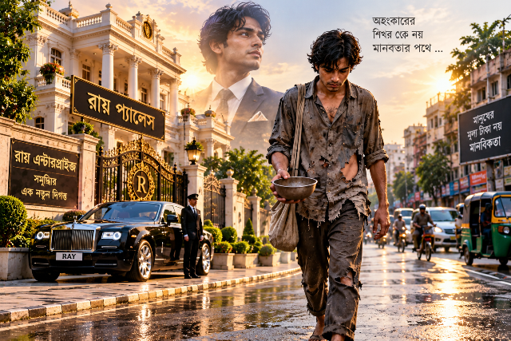
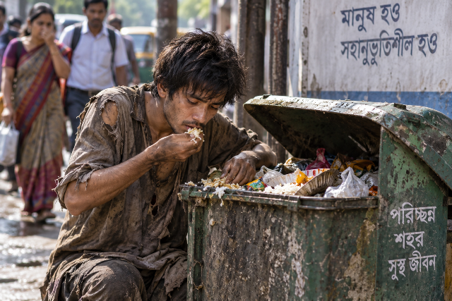
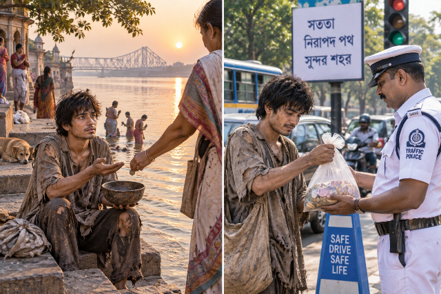
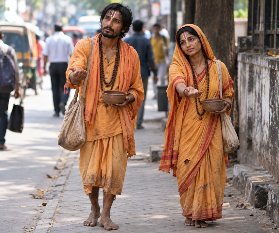

ধনাঢ্য ব্যবসায়ীর অহংকারী পুত্র খোকন এক বৃদ্ধ ভিখারীকে অপমান করার শাস্তি হিসেবে কিছু মাসের জন্য নিজেই এক অচেনা শহরে ভিখারী হয়ে বাঁচতে বাধ্য হয় — এক কঠিন অগ্নিপরীক্ষা, ভালোবাসা আর মানুষ হয়ে ওঠার গল্প।
খোকনের বয়স তখন পঁচিশ পার হয়নি। সে ছিল শহরের এক সুবিশাল ধনাঢ্য ব্যবসায়ীর একমাত্র সন্তান। অঢেল অর্থ, বিলাসবহুল প্রাসাদ, দামী গাড়ির বহর—কোনো কিছুরই কমতি ছিল না তার জীবনে। কিন্তু সেই প্রাচুর্যের মহাসমুদ্রে দাঁড়িয়েও তার বাবার মনে ছিল এক গভীর দীর্ঘশ্বাস। রাতের পর রাত তাঁর ঘুম হতো না একমাত্র ছেলে খোকনের ভবিষ্যৎ চিন্তা করে।
খোকন ঘিরে থাকত একঝাঁক সুযোগসন্ধানী বন্ধু। সেই মেকি বন্ধুত্বের ভিড়ে প্রতিদিন চলত জলের মতো টাকা ওড়ানোর উৎসব। টাকা তার কাছে ছিল স্রেফ হাতফেরতা কাগজের টুকরো। আড্ডা, দামী রেস্তোরাঁয় অমিতব্যয়িতা আর নিত্যনতুন বিলাসিতার নেশায় সে অন্ধ হয়ে উঠেছিল। শুধু তা-ই নয়, দিন দিন তার আচরণের ধার ও ভাষার রুক্ষতা বাড়ছিল। সামনে কে দাঁড়িয়ে আছে—বৃদ্ধ না তরুণ, বিত্তবান না নিঃস্ব—সেসবের তোয়াক্কা না করে যাকে-তাকে কটু কথা বলা তার অভ্যাসে পরিণত হয়েছিল।
অথচ তার বাবা ছিলেন সম্পূর্ণ ভিন্ন ধাতুতে গড়া মানুষ। জীবনের কঠিন সংগ্রাম আর সততার ওপর ভর করে তিনি এত বড় ব্যবসার সাম্রাজ্য গড়ে তুলেছিলেন। অন্তরে ছিলেন অতীব নম্র ও শ্রদ্ধাশীল। ছেলেকে বহুবার বুকে টেনে নিয়ে বুঝিয়েছেন,
—"খোকন, টাকা দিয়ে চাল কেনা যায়, কিন্তু নীতি কেনা যায় না। টাকা যেন কখনো তোর বুকের ভেতর থেকে মানুষটাকে মেরে না ফেলে।"
কিন্তু বাবার সেই হিতোপদেশ খোকনের এক কান দিয়ে ঢুকে অন্য কান দিয়ে বেরিয়ে যেত।
একদিন রৌদ্রোজ্জ্বল দুপুরে প্রাসাদসম বাড়ির ফটকের সামনে এক বৃদ্ধ ভিখারী এসে দাঁড়ালেন। পরনে জীর্ণ শতছিন্ন বস্ত্র, বয়সের ভারে নুব্জ শরীর, আর জখম হওয়া হাতে একটি পুরোনো ভিক্ষার পাত্র। কাঁপানো কণ্ঠে খোকনের দিকে তাকিয়ে বৃদ্ধ বললেন,
—"বাবা, দুটো দিন পেটে কিছু পড়েনি। একটু সাহায্য করো, কিছু কিনে খাই।"
খোকন তখন ফটকের সামনে দাঁড়িয়ে মোবাইল ঘাঁটছিল। বিরক্তিতে তার মুখ বিকৃত হয়ে উঠল। চোখ মুখ কুঁচকে সে চেঁচিয়ে বলল,
—"দূর হও এখান থেকে! কাজের সময় মাথা খারাপ করতে আসে সব!"
বৃদ্ধ হাতজোড় করে শান্ত গলায় বললেন,
—"রাগ কোরো না বাবা। সামান্য একটু দান করো, বড় উপকার হয়।"
বৃদ্ধের এই মৃদু প্রতিবাদটুকুই খোকনের অহংকারে বিষাক্ত তীরের মতো বিঁধল। মেজাজ হারিয়ে সে সজোরে এক লাথি মারল বৃদ্ধের বুকে। ছিটকে মাটিতে পড়ে গেলেন অশীতিপর বৃদ্ধ। কিন্তু খোকনের তাণ্ডব সেখানেই থামল না; নিজের জুতো দিয়ে সে বৃদ্ধের মাটিতে পড়ে থাকা হাতটা পিষে দিতে লাগল। আর্তনাদে ভেসে গেল প্রাঙ্গণ, মুহূর্তে পাকা মেঝেতে ছড়িয়ে পড়ল তাজা লাল রক্ত।
ঠিক তখনই দরজায় এসে দাঁড়িয়েছিলেন খোকনের বাবা। দৃশ্যটি দেখে থমকে গেলেন তিনি। স্তব্ধ, বাকরুদ্ধ হয়ে কিছুক্ষণ দাঁড়িয়ে রইলেন। তাঁর বুকের ভেতরটা যেন মুহূর্তেই ভেঙে চুরমার হয়ে গেল।
ছেলের দিকে তাকিয়ে তিনি কাঁপানো গলায় শুধু জিজ্ঞেস করলেন,
—"তুই… তুই এটা কী করলি খোকন?"
খোকন ভয়ার্ত চোখে বাবার দিকে তাকাল, কিন্তু মুখ দিয়ে কোনো শব্দ বের হলো না।
বাবা আর এক মুহূর্তও দেরি না করে ছুটে গেলেন বৃদ্ধের কাছে। নিজের দামি পাঞ্জাবির তোয়াক্কা না করে হাঁটু গেড়ে বসে রক্তাপ্লুত বৃদ্ধের হাত দুটি নিজের হাতে তুলে নিলেন। বাষ্পরুদ্ধ কণ্ঠে বললেন,
—"আমাকে ক্ষমা করে দিন বাবা। জন্ম দিয়েও আমি ওকে মানুষ করতে পারিনি। এই পাপের দায় আমার।"
বৃদ্ধ কোনো কথা বললেন না, শুধু নীরবে চোখের জল ফেললেন।
খোকনের বাবা এবার উঠে দাঁড়ালেন। ছেলের দিকে তাকালেন তিনি। সেই চোখে তখন আর শুধু রাগ ছিল না, ছিল এক মহাসাগরের মতো গভীর হতাশা আর ধিক্কার। তিনি বললেন,
—"আমি তোকে বিশাল সাম্রাজ্যের মালিক করতে চেয়েছিলাম, কিন্তু রক্ত-মাংসের মানুষ বানাতে চেয়েছিলাম সবার আগে। কিন্তু আমি চরমভাবে ব্যর্থ হয়েছি।"
খোকন এবার ভয় পেয়ে সামনে এগিয়ে এলো,
—"বাবা! ভুল হয়ে গেছে! আমি আর কখনো এমন করব না, সত্যি বলছি!"
কিন্তু বাবার সিদ্ধান্তের চাকা ততক্ষণে ঘুরে গেছে। তিনি ঘরে ঢুকে গেলেন এবং কিছুক্ষণ পর বেরিয়ে এসে এক কঠিন ঘোষণা দিলেন,
—"আজ, এই মুহূর্ত থেকে আমার অর্জিত সম্পত্তির ওপর তোর আর কোনো অধিকার রইল না।"
খোকন বজ্রাহতের মতো দাঁড়িয়ে রইল,
—"ব-বাবা! এসব কী বলছ?"
বাবার চোখ দুটি তখন পাথরের মতো শক্ত। তিনি শান্ত কিন্তু দৃঢ় কণ্ঠে বললেন,
—"আমার এই সমস্ত ভিটেমাটি, ব্যবসা, ব্যাংক ব্যালেন্স—সব সম্পত্তি আমি এই লাঞ্ছিত বৃদ্ধ ভিখারীর নামে লিখে দিচ্ছি।"
—"বাবা! পা ধরি তোমার, এমন সর্বনাশ কোরো না! আমাকে একটা সুযোগ দাও!"—খোকন চিৎকার করে বাবার পায়ে পড়তে গেল। কিন্তু বাবা সরিয়ে দিলেন নিজেকে। তৎক্ষণাৎ পারিবারিক আইনজীবীকে ডেকে সমস্ত নথিপত্র প্রস্তুত করা হলো। খোকন শত অনুনয়-বিনয় করেও বাবাকে একচুল গলাতে পারল না। চোখের সামনেই কোটি কোটি টাকার সমস্ত সম্পত্তি হস্তান্তরিত হয়ে গেল এক নিঃস্ব ভিখারীর নামে।
এক মুহূর্তে খোকন রাজপুত্র থেকে সম্পূর্ণ পথের ফকির হয়ে গেল।
কাগজপত্রে সই হওয়ার পর বৃদ্ধ ভিখারী ধীরেসুস্থে উঠে দাঁড়ালেন। খোকনের বিধ্বস্ত মুখের দিকে তাকিয়ে শান্ত স্বরে বললেন,
—"দেখো খোকন, আমি ভিক্ষুক হতে পারি, কিন্তু অন্যের সম্পদে আমার কোনো লোভ নেই। তোমার বাবার কষ্টের টাকা আমি ছোঁব না।"
খোকন অপরাধীর মতো মাথা নিচু করে রইল।
বৃদ্ধ আবার বললেন,
—"তবে তুমি আমার গায়ে যে আঘাত করেছ, আমার আত্মসম্মান চূর্ণ করেছ—তার শাস্তি তোমাকে পেতেই হবে।"
খোকন চোখ তুলে শুধাল,
—"কী শাস্তি?"
বৃদ্ধ বললেন,
—“তোমাকে অন্য জায়গায় গিয়ে ভিক্ষা করে জীবিকা নির্বাহ করতে হবে। সেই ভিক্ষার টাকা থেকে পাঁচ হাজার টাকা সঞ্চয় করে আমাকে দিতে হবে। যতদিন না সেই পাঁচ হাজার টাকা পূর্ণ হচ্ছে, ততদিন তোমার শাস্তি শেষ হবে না।”
খোকনের বুকের ভেতরটা ছ্যাঁৎ করে উঠল,
—"আমি… আমি ভিক্ষা করব?"
—"হ্যাঁ, তুমি। আর শোনো,"—বৃদ্ধ যোগ করলেন,—" কিন্তু এই শাস্তির দিনগুলিতে কেউ তোমার আসল পরিচয় জানতে পারবে না, তুমি আসলে কে।" মনে রাখবে অন্য কোনো ভাবে রোজগার করলে চলবে না, যদি অন্য কোনো কাজ করো তা বিনা পয়সায় করতে হবে। আমি তোমার গতিবিধি লক্ষ্য রাখার জন্য লোক পাঠাবো, সে আড়াল থেকে তোমাকে লক্ষ রাখবে।
খোকন নিস্তব্ধ হয়ে দাঁড়িয়ে রইল।
বৃদ্ধ কঠোর শর্ত আরোপ করে বললেন,
—"প্রতিদিন সকালে খালি হাতে রাস্তায় নামবে। কোনো টাকা বা দামী জিনিস সাথে রাখতে পারবে না। সারাদিন হাত পেতে ভিক্ষা করে যা পাবে তাই দিয়েই তোমার অন্নসংস্থান করবে। কোনো ভাবেই তোমার আগের দিনে ভিক্ষার টাকা খরচ করতে পারবে না।
—"যতদিন ৫০০০ টাকা যোগার না করতে পারবে ততদিন তোমার শাস্তি বহাল থাকবে। এইভাবে তুমি বুঝতে পারবে—দুয়ারে দুয়ারে হাত পাতার যন্ত্রণাই বা কী, আর এক মুঠো অন্নের মূল্যই বা কত।"
একটু থেমে বৃদ্ধ তাঁর শেষ বার্তাটি দিলেন,
—"যদি কোনো ছলচাতুরি ছাড়া সততার সাথে তুমি ৫০০০ টাকা রোজগার করে শাস্তি সম্পূর্ণ করতে পারো, তবে কথা দিচ্ছি—তোমার বাবার এই সমস্ত সম্পত্তি আমি অক্ষত অবস্থায় তোমাকে ফিরিয়ে দেব।"
খোকন নিঝুম হয়ে দাঁড়িয়ে রইল। তার সামনে আজ আর কোনো দ্বিতীয় পথ খোলা ছিল না। একপাশে হারিয়ে যাওয়া বিশাল রাজত্ব—যা এখন আইনের চোখে এক ভিখারীর, আর অন্যপাশে এক অনিশ্চিত, অপমানজনক কয়েক মাসের ভিক্ষাজীবন।
খোকন জানত না সেই অচেনা শহরের ধূলিমাখা পথ তাকে কোথায় নিয়ে যাবে। সে শুধু এটুকু বুঝতে পারছিল—
আগামী কতো দিনের জন্য তাকে নিজের অহংকার বিসর্জন দিয়ে একজন সত্যিকারের ভিখারী হয়েই বাঁচতে হবে তা তার জানা নেই।
আর এই কঠিন অগ্নিপরীক্ষার শেষেই লুকিয়ে আছে তার জীবনের সবচেয়ে বড় শিক্ষা—মানুষ হয়ে ওঠার পাঠ।
পরদিন ভোরের আলো ফোটার আগেই খোকনের কয়েক মাসের শাস্তির কঠিন যাত্রা শুরু হলো।
যে ছেলে এতদিন দামী বিলাসবহুল গাড়িতে ছাড়া পা বাড়ায়নি, যার পকেটে সবসময় কড়কড়ে টাকার বান্ডিল থাকত, সেই খোকনের হাতে আজ কিছুই নেই। না আছে কোনো অর্থ, না মোবাইল, না কোনো সামাজিক পরিচয়। পরনে স্রেফ একটা সাধারণ পুরোনো পোশাক, আর হাতে এক নিঃস্ব ভিক্ষার পাত্র।

শহরের রাস্তাঘাট, পরিবেশ—সবই তার কাছে সম্পূর্ণ অজানা, অচেনা।
বাড়ি থেকে বের হওয়ার আগে বৃদ্ধ ভিখারীর সেই শেষ কথাটি তার কানে বাজছিল—
—"মনে রেখো, তোমার আসল পরিচয় যেন কেউ না জানতে পারে। নিজের পরিচয় কাউকে দেবে না। রক্ত-মাংসের মানুষ হিসেবে তোমাকে এই ক’মাস টিকে থাকতে হবে।"
খোকন নিঃশব্দে মাথা নেড়ে একা রওনা হয়ে গিয়েছিল সেই অচেনা শহরের পথে।
সকাল হতে না হতেই রাস্তার একপাশে দাঁড়িয়ে সে প্রথমবারের মতো এক পথচারীর সামনে হাত বাড়াল। লজ্জায় ও দ্বিধায় তার গলা শুকিয়ে কাঠ হয়ে আসছিল। বুক চিরে যেন নিঃশ্বাস বের হচ্ছিল না। তবু কোনো মতে তোতলে বলল,
—"বাবু… একটু সাহায্য করবেন?"
লোকটি এক মুহূর্ত থেমে তাকে আপাদমস্তক দেখে নিয়ে তাচ্ছিল্যের সুরে বলল,
—"গায়ে তো হাত-পা জোয়ান দেখছি! খেটে খেতে পারো না? সস্তা ভিক্ষা চাইছ!"
খোকন অপরাধীর মতো মাথা নিচু করে রইল। লোকটি হনহন করে চলে গেল।
কিছু দূর এগিয়ে সে এক প্রৌঢ়া মহিলার সামনে হাত পাতল,
—"মা, দুটো টাকা ভিক্ষা দেবেন? কিছু খাইনি…"
মহিলাটি বিরক্তির সাথে মুখ ঘুরিয়ে জবাব দিলেন,
—"জোয়ান-মরদ ছেলে হয়ে ভিক্ষা করতে লজ্জা করে না? ঢং যত!"
কথাটা তপ্ত চাবুকের মতো খোকনের বুকের ভেতর গিয়ে বিঁধল। অপমান সইতে না পেরে সে দাঁড়িয়ে রইল নীরব হয়ে।
কিছুক্ষণ পর অন্য এক পথচারীর সামনে গিয়ে দাঁড়াতেই লোকটি এমন হিংস্র চোখে তার দিকে তাকাল, যেন খোকন কোনো মহাপাপ করে ফেলেছে। গর্জে উঠে বলল,
—"সর্ এখান থেকে! সামনে দাঁড়াবি না একদম!"
খোকন পিছিয়ে এলো। কিন্তু পিছিয়ে গেলে তো চলবে না। আজ তাকে হাত পেতেই পেটের ভাত জোগাড় করতে হবে, নইলে উপবাসই ভাগ্য।
দুপুরের দিকে রোদের উত্তাপ আরও তীব্র হয়ে উঠল। মাথার ওপর প্রখর সূর্য, আর পেটের ভেতর ক্ষুধার অনল। পেটে যেন কামড় দিচ্ছিল অনাহার। তৃষ্ণায় ছাতি ফেটে যাচ্ছিল। উপায় না দেখে সে রাস্তার ধারের এক চায়ের দোকানের সামনে গিয়ে দাঁড়াল,
—"দাদা, একটু সাহায্য করবেন? খুব খিদে পেয়েছে…"
দোকানী কটমট করে তাকিয়ে বিরক্তি প্রকাশ করল,
—"সকাল থেকে তোকে দেখছি এই চত্বরে চক্কর কাটতে। কাট এখান থেকে! ক্রেতাদের মাথা খারাপ করিস না!"
খোকন কাতর চোখে আবার হাত বাড়াল,
—"টাকা দিতে হবে না দাদা… একটু খাবার যদি দেন, বড় উপকার হয়…"
কথাটি শেষ হওয়ার আগেই দোকানী রেগে আগুন হয়ে হাতে থাকা ফোটানো কাগজের চায়ের কাপটি সজোরে ছুড়ে মারল খোকনের দিকে।
গরম চা এসে পড়ল খোকনের বুকের জামায় আর চামড়ায়। যন্ত্রণায় শিউরে উঠে পিছিয়ে গেল সে। চামড়া লাল হয়ে জ্বলে উঠল। দোকানী চিৎকার করে উঠল,
—"নাটক মারতে এসেছিস? ভাগ এখান থেকে, নাহলে গরম জল গায়ে ঢেলে দেব!"
খোকন স্তব্ধ হয়ে দাঁড়িয়ে রইল। চোখের কোণ বেয়ে অবাধ্য জলের ধারা নেমে এলো। কিন্তু সে গলার কাছে দলা পাকিয়ে থাকা কান্নাটাকে চেপে রাখল। এতদিন যে খোকন সামান্যতম অসম্মান সহ্য করেনি, সে আজ শিখল—অপমান কতটা ভারী আর যন্ত্রণাদায়ক হতে পারে।
বিকেল গড়িয়ে গেল। সারাদিনে সে কত শত মানুষের কাছে হাত পেতেছে, কতবার মিনতি করে বলেছে "একটু সাহায্য করুন"—তার কোনো হিসাব নেই। কিন্তু তার মাটির পাত্রটি তখনও করুণভাবে খালি। একটা ফুটো পয়সাও পড়েনি তাতে।
খোকন পাত্রটির দিকে অপলক দৃষ্টিতে তাকিয়ে রইল। মনে পড়ে গেল বাবার রাজপ্রাসাদসম বাড়ির কথা। সেখানে ডাইনিং টেবিলে কত শত পদের খাবার সাজানো থাকত, ফ্রিজ ভরা থাকত দামী দামী স্ন্যাকসে। এক ফোন কলে রেস্তোরাঁ থেকে খাবার চলে আসত। আর আজ? এক টুকরো শুকনো রুটির জন্য তাকে শত শত মানুষের পাউডার মাখা মুখ আর কটু কথা সহ্য করতে হচ্ছে!
পেটের ক্ষুধার জ্বালায় মাথা ঝিমঝিম করছিল। সে ভাবল—
"আমি কি সত্যি পারব? আর কতক্ষণ এভাবে সহ্য করা যায়?"
কিন্তু উত্তর দেওয়ার মতো কেউ ছিল না।
সন্ধ্যার ঠিক মুখে খোকন যখন একটি গলির মুখে ক্লান্ত হয়ে দাঁড়িয়ে ছিল, হঠাৎ পেছন থেকে এক মাতব্বরি গোছের লোক এসে সজোরে তার জামার কলার ধরে টান মারল।
—"এই শালা! আমার পকেট থেকে টাকাটা তুই-ই মেরেছিস না?"
খোকন চমকে উঠে ভয়ার্ত গলায় বলল,
—"না… না! আমি কিচ্ছু নিইনি! বিশ্বাস করুন!"
লোকটি চিৎকার করে আশপাশের লোক জড়ো করে ফেলল,
—"পাক্কা মিথ্যেবাদী! একটু আগেই তোকে আমার পিছু পিছু ঘুরঘুর করতে দেখেছি!"
—"আমি শুধু ভিক্ষা চাইছিলাম দাদা, আমি পকেটমার নই!"
—"চুপ কর পকেটমার!"
মুহূর্তের মধ্যে চার-পাঁচজন লোক ঘিরে ধরল খোকনকে। ভিড়ের মধ্য থেকে কেউ তাকে সজোরে ধাক্কা দিল, কেউ এসে গালে কষে এক চড় বসিয়ে দিল। একজন চেঁচিয়ে বলল,
—“এই ভিখারী ব্যাটারাই সুযোগ বুঝলে পকেট কাটে! মার একে!”
কেউ আর সত্যিটা জানার চেষ্টা করল না। অভিযোগটা সত্যি কি না, সেটাও কেউ ভাবল না। ভিড়ের মধ্যে একজন চিৎকার করেছে—এইটুকুই যেন যথেষ্ট ছিল।
আসলে খোকনের গায়ে শুধু সেদিনের রাগ পড়ছিল না। শহরের মানুষের মনে কত রকমের রাগ যে সারাদিন জমে থাকে—তার হিসেব কেউ রাখে না। অফিসে বসের সামনে অপমানিত হয়েও যে মানুষটি মুখ খুলতে পারে না, বাড়ি ফিরে প্রতিবেশীর সঙ্গে ঝগড়ার রাগ বুকের মধ্যে চেপে রাখে; কারও সংসারে অশান্তি, কারও অর্থকষ্ট, কারও নিজের ব্যর্থতার যন্ত্রণা—সবকিছু কোথাও না কোথাও জমে থাকে।
কিন্তু সেই রাগের আসল ঠিকানা খুঁজে পাওয়া যায় না। বসকে জবাব দেওয়া যায় না, প্রভাবশালী প্রতিবেশীর সঙ্গে লাগা যায় না, সংসারের মানুষটির ওপরও সব কথা বলা যায় না। তাই কখনও কখনও সেই জমে থাকা ক্ষোভ এমন একজনের ওপর গিয়ে পড়ে, যে সবচেয়ে অসহায়, সবচেয়ে একা এবং প্রতিবাদ করার ক্ষমতাও যার নেই।
খোকনও সেদিন যেন সেই অদৃশ্য রাগগুলোর লক্ষ্য হয়ে উঠেছিল। একজনের হাতের চড়ের সঙ্গে মিশে যাচ্ছিল অন্যজনের অপমান, আরেকজনের সংসারের অশান্তি, কারও নিজের জীবনের ব্যর্থতা।
ভিড় তখন একজন মানুষকে দেখছিল না। তারা দেখছিল তাদের নিজেদের জমে থাকা রাগের জন্য একটি সহজ শিকার।
খোকন অঝোরে কাঁদতে কাঁদতে হাতজোড় করে বলল,
—"দোহাই আপনাদের, আমি পকেটমার নই! আমি কোনো টাকা নিইনি!"
কিন্তু উন্মত্ত ভিড় কি আর সত্যি শোনে? একজন লোক তাকে আরও এক চড় মারতে হাত তুলল।
ঠিক তখনই ফুটপাতে বসে থাকা অন্য এক ভিখারী ধুঁকতে ধুঁকতে উঠে দাঁড়াল। লোকটির বয়স খুব বেশি নয়, তবে জীর্ণ শরীর। তার বাঁ হাতটি পক্ষাঘাতগ্রস্ত হয়ে শরীরের পাশে অসহায়ভাবে ঝুলে ছিল। সে কোনোরকমে ভিড় ঠেলে সামনে এসে নিজের এক হাত তুলে দাঁড়াল,
—"ওকে মারবেন না বাবুরা! ও পকেটমার নয়, ও কোনো অন্যায় করেনি!"
লোকেরা রেগে তার দিকে তাকাল,
—"তুই ওর হয়ে ওকালতি করছিস কেন রে? তোর চেনা নাকি?"
ভিখারীটি শান্ত অথচ দৃঢ় কণ্ঠে বলল,
—"আমি সকাল থেকে এক জায়গায় বসে ওকে দেখছি। ছেলেটা শুধু মানুষের কাছে হাত পেতে কান্নাকাটি করছিল, কারও পকেটে হাত দেয়নি।"
অন্য একজন সন্দেহ প্রকাশ করে বলল,
—"তুই এত গ্যারান্টি দিচ্ছিস কীভাবে?"
ভিখারীটি একটু হেসে বলল,
—"কারণ ওকে দেখে বোঝা যাচ্ছে ও এই ধান্দার লোক নয়। ও পকেট মারা তো দূর, ভিক্ষা করতেই জানে না।"
কথাটা শুনে খোকন অশ্রুসজল চোখে ভিখারীটির দিকে তাকিয়ে রইল। কিছুক্ষণ বাকবিতণ্ডার পর লোকগুলো গালিগালাজ করতে করতে চলে গেল।
খোকন জোর হারিয়ে রাস্তার পাশে ধপ করে বসে পড়ল। তার চোখ দিয়ে অনবরত জল গড়িয়ে পড়ছিল।
সেই একহাতে পঙ্গু ভিখারীটি ধীরপায়ে তার পাশে এসে বসল। খোকনের কাঁধে হাত রেখে মৃদু স্বরে বলল,
—"খুব খিদে পেয়েছে, তাই না?"
খোকন চোখ মুছে শুধু নিঃশব্দে মাথা নাড়ল।
ভিখারীটি তার ঝুলির ভেতর থেকে গামছায় বাঁধা সামান্য রুটি আর একটু গুড় বের করল। খোকনের দিকে বাড়িয়ে দিয়ে বলল,
—"নাও, খেয়ে নাও। পেট খালি থাকলে কান্না থামবে না।"
খোকন অবাক হয়ে তার মুখের দিকে তাকাল,
—"আর… আর আপনি? আপনি খাবেন না?"
লোকটি ঠোঁটের কোণে এক চিলতে মলিন হাসি ফুটিয়ে বলল,
—"আমার অভ্যাস আছে ভাই। প্রতিদিন খাবার না পেলেও কোনো না কোনোভাবে আমার চলে যায়। তুমি আজ সারাদিন এক দানাও পেটে দাওনি, আমি দেখেছি। খাও।"
খোকন কাঁপানো হাতে খাবারটুকু তুলে নিল। প্রথম গ্রাসটি মুখে দিতেই চোখের জলে গাল ভেসে গেল তার, বাসি রুটি গন্ধ বেরোচ্ছে, তবুও অসহায়ের মতো তাই সে খেতে লাগলো। সারাদিনের এত মার, গরম চায়ের পোড়া দাগ, অপমান আর অবহেলার পর—এক অচেনা ভিখারীর এই সামান্য শুকনো বাসি রুটিটুকুই যেন তার কাছে স্বর্গের সুধা বলে মনে হলো।
আহার শেষ হলে খোকন ধীর গলায় জিজ্ঞেস করল,
—"আপনার নাম কী?"
লোকটি এক নিঃশ্বাস ফেলে বলল,
—"নাম জেনে কী হবে ভাই? এই শহরের মানুষ আমাদের নাম দিয়ে চেনে না। আমাদের একটাই নাম—ভিখারী।"
খোকন চুপ হয়ে গেল। তার বুক ঠেলে এক গভীর দীর্ঘশ্বাস বেরিয়ে এলো।
চারপাশে সন্ধ্যা নেমে এসেছে। অন্ধকার ঘনিয়ে আসছে রাস্তায়। ভিখারীটি খোকনের দিকে তাকিয়ে বলল,
—"রাতে থাকার কোনো জায়গা আছে তোমার?"
খোকন মাথা নেড়ে সকাতরে বলল,
—"না, কেউ নেই আমার…"
লোকটি কিছুক্ষণ খোকনের মুখের দিকে তাকাল। হয়তো খোকনের ভেতরের অসহায়ত্ব সে অনুভব করতে পেরেছিল। সে বলল,
—"চলো আমার সাথে। আজ রাতে আমার ডেরাতেই থাকবে।"
খোকন যেন খড়কুটো আঁকড়ে ধরল। সে লোকটির পিছু পিছু হাঁটা শুরু করল।
রাস্তার কিছুটা দূরে, শহরের কোলাহল ছাড়িয়ে একটি ভাঙা কালভাটের নিচে গিয়ে তারা পৌঁছাল। কালভাটের নিচে স্যাঁতসেঁতে পরিবেশ। সেখানে আরও কয়েকজন নিঃস্ব মানুষ রাত কাটানোর প্রস্তুতি নিচ্ছে। কারও গায়ে ছেঁড়া কম্বল, কারও নিচে পাতা পুরোনো খবরের কাগজ।
সেই ভিখারীটি একটি জীর্ণ পুরোনো চাদর মেঝের ওপর পেতে দিয়ে খোকনকে বলল,
—"এখানে শুয়ে পড়ো। আজ রাতটা কোনো মতে কাটিয়ে দাও। কাল সকালের কথা কাল ভাবা যাবে।"
খোকন চারপাশের জীর্ণ পরিবেশের দিকে তাকাল। এটাই তার আজকের প্রাসাদ, এটাই তার নতুন আশ্রয়!
যে ছেলে এতদিন তুলতুলে নরম বিছানায় এসি ঘরে ঘুমিয়ে অভ্যস্ত, আজ তার রাত কাটছে রাস্তার এক নোংরা কালভাটের নিচে, শক্ত মাটিতে।
সে চুপচাপ মাটিতে শুয়ে পড়ল। কিন্তু চোখে ঘুম এলো না।
আকাশের দিকে চেয়ে চোখ বন্ধ করতেই তার চোখের সামনে ভেসে উঠতে লাগল—বাবার গম্ভীর মুখ, বাড়ির সুবিশাল ফটক, দামী গাড়ির গর্জন, আর বন্ধুদের সাথে ওড়ানো টাকার হিসাব।
তারপরই মনে পড়ে গেল আজকের কথা—সেই চায়ের দোকানের গরম চায়ের ছ্যাঁকা, পথচারীদের কটু কথা, পকেটমার অপবাদ, গালে চড়ের মার…
আর সবশেষে—এক হাত পঙ্গু এক অচেনা ভিখারীর নিজের মুখের খাবার ভাগ করে দেওয়ার দৃশ্য।
আজকের এই প্রথম দিনে খোকন জীবনের সবচেয়ে বড় সত্যটি উপলব্ধি করল—
যার কাছে জাগতিক কোনো সম্পদ নেই, তার কাছেও দেওয়ার মতো এক মহাসমুদ্র হৃদয় থাকতে পারে। মানবতা দামী পোশাকে থাকে না, থাকে মানুষের অন্তরে।
কালভাটের নিচে শুয়ে, মশা, স্যাঁতসেঁতে মাটির গন্ধ নিতে নিতে খোকনের শাস্তির প্রথম দিনটি শেষ হলো।
তবে সে জানত—এটা তো কেবল প্রথম প্রহর। আগামী দিনগুলোতে তার জন্য আরও কত অপমান, ক্ষুধা, পরীক্ষা আর অন্ধকারের পথ অপেক্ষা করে আছে, তা তার কল্পনারও বাইরে।
পরদিন ভোরের আলো ফুটতেই খোকনের ঘুম ভাঙল ভিখারী বন্ধুটির ডাকে।
—"ওঠো ভাই। আজ থেকে শুধু হাত পাতলেই চলবে না, ভিক্ষা করার আসল কৌশলটুকুও শিখতে হবে।"
খোকন উঠে বসে জীর্ণ কালভাটের অন্ধকার কোণে চোখ ডলল। ভিখারীটি তার দিকে গভীর দৃষ্টিতে তাকিয়ে বলল,
—"মানুষের কাছে ভিক্ষা চাওয়া যতটা সহজ মনে হয়, সত্যিটা তা নয়। রাস্তায় হাত বাড়ালেই লোকে পকেটে হাত দেবে না। করুণা আদায় করারও একটা ব্যাকরণ আছে।"
খোকন চুপচাপ মনোযোগ দিয়ে তার কথা শুনতে লাগল।
—"প্রথম নিয়ম—কাউকে কখনো বিরক্ত করবে না। কেউ হয়তো জরুরি কাজে ছুটছে, অফিসে বা বাজারে যাচ্ছে, তখন তার পিছু নেবে না। কাউকে পথ আটকে থামিয়ে বারবার চিল্লাবে না। ব্যস্ত মানুষকে বিরক্ত করলে দয়ার বদলে মেলে ধিক্কার।"
খোকন একটু ইতস্তত করে জিজ্ঞেস করল,
—"তাহলে কখন মানুষের সামনে হাত বাড়াব?"
ভিখারীটি মলিন হেসে উত্তর দিল,
—"মানুষ যখন সারাদিনের কাজ শেষ করে বাড়ি ফেরে, তখন। কাজ শেষে ক্লান্ত মানুষের মন কিছুটা নরম থাকে, মেজাজ হালকা থাকে। তখন বিনীতভাবে, শান্ত গলায় বলবে—'বাবু, একটু সাহায্য করবেন?' কিংবা 'মা, একটু দয়া করুন।'"
একটু থেমে সে আবার বলল,
—"আর একটা কথা সারাজীবন মনে রাখবে। কাউকে টাকা দিতে বাধ্য করা যায় না। যে স্বেচ্ছায় এক পয়সাও দেবে, মন থেকে তার মঙ্গল কামনা করবে। তাকে আশিস দেবে।"
তারপর ভিখারীটি নিজেই হাত জোড় করে নিচু গলায় আবৃত্তি করার মতো দেখিয়ে দিল,
—"বলবে—'ভগবান আপনার মঙ্গল করুন।'"
খোকন নিজের অজান্তেই কথাটা বিড়বিড় করে কয়েকবার উচ্চারণ করল,
—"ভগবান আপনার মঙ্গল করুন…"
ভিখারীটি সন্তুষ্ট হয়ে বলল,
—"হ্যাঁ, ঠিক এভাবে। এই আশীর্বাদের মধ্যে যেন কোনো কৃত্রিমতা না থাকে, থাকে খাঁটি মানবতা। যে তোমাকে দান করছে, সে তোমার চেয়ে বড় বা ছোট—এসব মনে আনবে না। সে-ও একজন মানুষ, তুমিও একজন মানুষ।"
এরপর সে একপাশে রাখা একটি পুরোনো, জীর্ণ বস্ত্রের পুঁটলি থেকে কিছু জামাকাপড় খোকনের দিকে বাড়িয়ে দিল,
—"এগুলো পরে নাও।"
খোকন হাত বাড়িয়ে পোশাকগুলোর দিকে তাকাল। জামাটির রং চটে গেছে, জায়গায় জায়গায় তালি দেওয়া আর সেলাই করা।
ভিখারীটি বলল,
—"এগুলো আমারই পুরোনো জামাকাপড়। তোমার গায়ের অত ভালো পোশাক পরে ভিক্ষা করতে নামলে লোকে ভণ্ড ভাববে, সন্দেহ করবে। আজ থেকে এই পোশাকই তোমার নতুন পরিচয়।"
খোকন কোনো অজুহাত না দেখিয়ে ধীরে ধীরে পোশাকগুলো গায়ে চড়িয়ে নিল। কাছে কোনো আয়না ছিল না, তাই কালভাটের পাশ দিয়ে বয়ে যাওয়া ঘোলা নদীর জলে নিজের প্রতিবিম্ব দেখে সে থমকে গেল। এ যেন অন্য এক খোকন—যার কোনো অহংকার নেই, রূপের দম্ভ নেই, রাজকীয় ভাবলেশ নেই।
সকালের দিকে ভিখারী বন্ধুটি খোকনকে শহরের এক প্রান্তে, নদীর ঘাটের কাছে নিয়ে গেল। জায়গাটি বেশ শান্ত। সারাদিন নানা কাজের সূত্রে নদীর পার দিয়ে মানুষজন আসা-যাওয়া করে।
সে খোকনের কাঁধে হাত রেখে বলল,
—"আজ সারাদিন তুমি এই নদীর ধারে বসবে। জোর করে কারও কাছে যাবে না। কেউ কিছু না দিলে একটা কটু কথাও বলবে না। শুধু ধৈর্য ধরে বসে থাকবে।"
খোকন নদীর ধারের বাঁধাধরা চাতালে চুপচাপ বসে পড়ল। প্রথম কয়েক ঘণ্টা সময় যেন কাটতেই চাইছিল না। লজ্জায় বুক কেঁপে উঠছিল। কত মানুষ পাশ দিয়ে চলে গেল, কেউ এক নজর তাকালও না, কেউবা ঘৃণাভরে মুখ ঘুরিয়ে নিল।
কিন্তু দুপুর গড়াতেই খোকন বন্ধুর শেখানো কথাগুলো প্রয়োগ করতে শুরু করল। ধীর ও বিনীত কণ্ঠে বলল,
—"বাবু, একটু সাহায্য করবেন?"
একজন মধ্যবয়সী লোক হাঁটতে হাঁটতে পকেট থেকে দু-টাকার একটা মুদ্রা তার পাত্রে ফেলে দিলেন। খোকন সঙ্গে সঙ্গে মাথা নত করে বিনীতভাবে বলল,
—"ভগবান আপনার মঙ্গল করুন।"
কিছুক্ষণ পর এক বয়স্ক মহিলা যাওয়ার পথে কয়েকটি টাকা পাত্রে রেখে গেলেন। খোকন স্বতঃস্ফূর্তভাবে বলে উঠল,
—"মা, ভগবান আপনার মঙ্গল করুন।"
দিনের শেষে নদীর পাড়ে বসে খোকন এক অদ্ভুত সত্য উপলব্ধি করল—ভিক্ষা করা স্রেফ হাত বাড়ানো নয়। এর জন্য নিজের সমস্ত অহংকার, রাগ আর লজ্জিত ভাবকে চূর্ণ করে অসীম ধৈর্যের পরীক্ষা দিতে হয়। টাকা পাওয়ার চেয়ে মানুষের সহানুভূতি আর বিশ্বাস অর্জন করা কত কঠিন!
ঠিক এই নদীর ঘাটেই খোকনের প্রতিদিন দেখা হতো এক ট্রাফিক পুলিশের সাথে। লোকটির চেহারা বেশ শক্তপোক্ত। প্রতিদিন ডিউটি শেষ করে সে নদীর ঘাটে আসত স্নান করতে। স্নানে নামার আগে তার সাথে থাকা ব্যাগ, জামাকাপড় আর মোবাইল ফোনটি একটু দূরে বসে থাকা এক পুরোনো ভিখারীর জিম্মায় রেখে যেত। স্নান সেরে উঠে সে সেই ভিখারীটিকে নিয়মিত পাঁচ টাকার একটি নোট গুঁজে দিত।
সেই ট্রাফিক পুলিশটি খোকনকেও প্রতিদিন খেয়াল করত। নতুন এসে বসা এই তরুণ ভিখারীটির বিষণ্ণ চোখ আর শান্ত আচরণ হয়তো তার চোখে পড়ত, কিন্তু সে কোনোদিন খোকনের পাত্রে একটা পয়সাও ফেলেনি। খোকনও নীরবে দূর থেকে তাকে স্নান সেরে চলে যেতে দেখত।
কয়েকদিন আগের কথা—
তখনও খোকনের জীবন ছিল অন্যরকম। প্রাসাদসম বাড়ি, অগাধ সম্পত্তি আর বেপরোয়া জীবন। সেই সময়ে খোকনের মা ছেলের মতিগতি দেখে চরম উদ্বেগে দিন কাটাচ্ছিলেন। তিনি মনে মনে ভাবতেন—ছেলেকে যদি সংসারধর্মে বাঁধা যায়, হয়তো কোনো ভালো মেয়ের প্রভাবে এসে খোকনের জেদ আর অহংকার কমবে। সংসারের দায়িত্ব ঘাড়ের ওপর পড়লে হয়তো ছেলেটা মানুষ হবে।
এই আশায় বুক বেঁধে তিনি একদিন এক অভিজ্ঞ ঘটককে খবর দেন। ঘটকমশাই বেশ কিছু সম্ভ্রান্ত ও বিত্তশালী পরিবারের মেয়েদের ছবি নিয়ে হাজির হয়েছিলেন। খোকনের মা একের পর এক ছবি দেখছিলেন, কিন্তু কোনোটিই তাঁর মনঃপুত হচ্ছিল না।
হঠাৎ একটি ছবির ওপর এসে তাঁর চোখ আটকে গেল।
মেয়েটির নাম পম্পা। কোনো জাঁকজমক বা কৃত্রিম সাজগোজ নেই, অত্যন্ত সাধারণ এক রূপ। কিন্তু সেই সাধারণ চেহারার মধ্যে এক অদ্ভুত স্নিগ্ধতা ও আত্মপ্রত্যয় ছিল।
ঘটক পম্পার পরিচয় দিয়ে বললেন,
—"মেয়েটির রূপের চেয়ে গুণ বেশি মা-লক্ষ্মী। নিজের পায়ে দাঁড়িয়ে লড়াই করছে। পড়াশোনা শেষ করে নিজের চেষ্টায় ছোট একটা হস্তশিল্পের দোকান চালায়। বাবা-মা দুজনেই এক সড়ক দুর্ঘটনায় মারা গেছেন, এখন পিসির কাছে থাকে। কোনো অতিরিক্ত চাহিদা নেই মেয়েটার।"
খোকনের মা ছবিটির দিকে কিছুক্ষণ স্তব্ধ হয়ে তাকিয়ে থেকে বললেন,
—"মেয়েটা দেখতে সাধারণ হলেও মনে হচ্ছে খুব পরিশ্রমী আর রুচিশীল। এই মেয়েটাই আমার খাপছাড়া ছেলেকে সোজা রাস্তায় আনতে পারবে।"
সেদিন সন্ধ্যায় খোকনের মা ছবিটা হাতে নিয়ে খোকনের ঘরে যান,
—"খোকন, একটা মেয়েকে আমার খুব পছন্দ হয়েছে, তার পরিচয় দিলেন। তুই অন্তত একবার ছবিটা দেখ না বাবা…"
খোকন তখন ফোনে বন্ধুদের সাথে ফোনে কথা বলছিল। বিরক্ত মুখে মা-র হাত থেকে ছবিটা টান মেরে নিল। কয়েক সেকেন্ড ছবিটার দিকে তাকিয়ে থেকে হঠাৎ এক চরম অবহেলায়—ছবিটা দু-টুকরো করে ছিঁড়ে মেঝেতে ফেলে দিল!
খোকনের মা আঁতকে উঠে বললেন,
—"এ কী করলি খোকন!"
খোকন রুক্ষ সুরে চেঁচিয়ে উঠল,
—"আমি এসব ফালতু বিয়ে-থা করব না! আমাকে নিয়ে টানাটানি বন্ধ করো তো!"
মা বুকে চরম আঘাত পেয়ে চোখ মুছতে মুছতে ঘর থেকে বেরিয়ে গেলেন। বিয়ের আলোচনা সেখানেই থমকে গেল।
তবে ঘটকমশাই পম্পার পিসির বাড়িতে খোকনের একটা ছবি আগেই দিয়ে এসেছিলেন। পম্পার পিসি সেই ছবিটি বিছানার তলে রেখে দিয়েছিলেন। কিন্তু তারপর খোকনদের তরফ থেকে আর কোনো যোগাযোগ না করায় বিষয়টি সেখানেই চাপা পড়ে যায়।
কেউ তখন ঘুণাক্ষরেও জানত না—এই অসম্পূর্ণ ও প্রত্যাখ্যাত পরিচয়টিই ভবিষ্যতের কোনো এক মোড়ে নতুন নাটকীয়তা নিয়ে ফিরে আসবে।
আর এখন… সেই দাম্ভিক খোকন নিজের জীবনের সবচেয়ে কঠিন অগ্নিপরীক্ষার মুখোমুখি। নদীর ঘাটে ধুলোবালির ওপর বসে সে এক-দু টাকার জন্য পথচারীদের সামনে হাত বাড়াচ্ছে। প্রতিদিন কত শত মানুষ তার সামনে দিয়ে হেঁটে যায়—কেউ করুণার চোখে দেখে, কেউবা এড়িয়ে যায়।
নদীর জলের দিকে তাকিয়ে খোকন শুধু নিজের ভেতরের পরিবর্তনটা টের পাচ্ছিল। সে বুঝতে পারছিল, রাজপ্রাসাদের ঐশ্বর্যের চেয়েও মানুষের একটু সহানুভূতি আর বিশ্বাস অর্জন করা কত শতগুণ কঠিন!
সেদিন সন্ধ্যায় নদীর ধারের কাজ শেষ করে খোকন ধীরে ধীরে শহরের রাস্তা ধরে হাঁটছিল। সারাদিনের ক্লান্তি আর শরীরের অবসন্নতা সত্ত্বেও এখন আর আগের মতো প্রতিটি মুহূর্তে তার মনে রাজপ্রাসাদসম বাড়ির কথা ভেসে ওঠে না। এই অচেনা শহরের গলি, পিচঢালা রাস্তা আর অচেনা বাতাসও ধীরে ধীরে তার জীবনের সঙ্গে সয়ে আসছে। কোথায় বসলে মানুষের মন নরম হয়, কোন সময়টুকুতে হাত বাড়ালে ভিক্ষা মেলে, আর কোথায় দাঁড়িয়ে নিজের আত্মসম্মান বিসর্জন না দিয়ে নীরবে অপেক্ষা করতে হয়—এসব কৌশল সে ধীরে ধীরে রপ্ত করছিল।
হাঁটতে হাঁটতে হঠাৎ রাস্তার মোড়ে কয়েকজন যুবকের অশালীন হাসির শব্দে খোকনের ধ্যান ভাঙল।
একটু সামনে তাকাতেই সে দেখতে পেল, এক সাধারণ কিন্তু মার্জিত চেহারার তরুণী হাতে একটি মোড়ানো প্যাকেট নিয়ে হেঁটে যাচ্ছে। সুন্দর রঙিন কাগজে প্যাকেটটি বাঁধানো, তার ওপর গোটা গোটা হরফে লেখা—'শুভ জন্মদিন'। মেয়েটি সম্ভবত কোনো গ্রাহকের জন্মদিনের উপহার পৌঁছে দিতে যাচ্ছিল।
কিন্তু চার-পাঁচজন বখাটে যুবক তার পথ আগলে দাঁড়িয়ে উত্যক্ত করছিল।
—"এই যে সুন্দরী, এত সন্ধ্যায় কোথায় দৌড়াচ্ছ?"
—"আমাদের সাথে একটু গল্প করে যাও না, এত তাড়া কিসের?"
মেয়েটি ভয়ে খানিকটা পিছিয়ে গিয়ে তাদের এড়িয়ে যাওয়ার আপ্রাণ চেষ্টা করছিল,
—"দয়া করে আমার পথ ছাড়ুন। আমাকে এটা সময়মতো পৌঁছে দিতে হবে, দেরি হয়ে যাচ্ছে।"
কিন্তু বখাটেরা সরার পাত্র নয়। একজন এগিয়ে এসে উপহারের প্যাকেটটি ছিনিয়ে নেওয়ার ভঙ্গিতে হাত বাড়াল,
—"দেখি দেখি, প্যাকেটের ভেতরে কী দামী জিনিস লুকিয়ে রেখেছ?"
মেয়েটি বুকের সাথে বুকচাপা দিয়ে প্যাকেটটি শক্ত করে ধরে পিছিয়ে গেল,
—"না! এটা একজনের অর্ডারের জিনিস। দয়া করে গায়ে হাত দেবেন না!"
দৃশ্যে খোকনের ভেতরের মানুষটি জেগে উঠল। অন্যায়ের প্রতিবাদ করার যে স্পর্ধা তার রক্তে ছিল, সন্ধ্যা হয়ে গেছে, সে মোটামুটি ভালো পোশাকেই ছিল, তাই সে এক মুহূর্তও না ভেবে এগিয়ে গিয়ে বলিষ্ঠ ও দৃঢ় কণ্ঠে বলল,
—"ওকে যেতে দিন।"
বখাটেরা চমকে ঘুরে তাকাল। খোকনের পরনে পুরোনো পোশাক থাকলেও তার দাঁড়িয়ে থাকার ভঙ্গি আর চোখের চাহনিতে এমন এক ব্যক্তিত্ব ছিল, যা সাধারণত সবার মধ্যে দেখা যায় না।
বখাটেদের একজন টিপ্পনী কেটে বলল,
—"তুই কে রে ভাই? নায়ক সাজতে এসেছিস?"
খোকন শান্ত কিন্তু কঠিন গলায় জবাব দিল,
—"আমি কে সেটা বড় কথা নয়। আপনারা একজন মেয়েকে একা পেয়ে বিরক্ত করছেন কেন? পথ ছাড়ুন।"
খোকনের স্থির দৃষ্টি আর নির্ভীক আচরণের সামনে বখাটেরা কেমন যেন দমে গেল। পরিস্থিতি সুবিধাজনক নয় বুঝে তারা কয়েক মুহূর্ত বিড়বিড় করে গালিগালাজ করতে করতে ছেলেগুলি অন্ধকারের গলিতে কেটে পড়ল।
পম্পা একটা দীর্ঘশ্বাস ফেলে হাঁফ ছেড়ে বাঁচল। তারপর খোকনের দিকে তাকিয়ে অত্যন্ত বিনীতভাবে বলল,
—"আপনাকে অনেক ধন্যবাদ। আপনি না এলে আজ যে কী হতো!"
খোকন মৃদু হেসে সৌজন্য প্রকাশ করল,
—"ধন্যবাদ দিতে হবে না। আপনি ঠিক আছেন তো?"
—"হ্যাঁ, আমি ঠিক আছি।"—পম্পা হাতের প্যাকেটটি একটু গুছিয়ে নিয়ে বলল,—"আসলে ওদের দেখে আমি খুব ভয় পেয়ে গিয়েছিলাম।"
খোকন বলল,
—"এখন আর ভয়ের কিছু নেই। আপনি আপনার ডেলিভারিটি নিরাপদে পৌঁছে দিন।"
পম্পা খোকনের মুখের দিকে তাকাল। পুরাতন পোশাকের ভেতরেও এই তরুণের রুচিশীল আচরণ তার মন ছুঁয়ে গেল। সে হেসে জিজ্ঞেস করল,
—"আপনি কি এই এলাকাতেই থাকেন?"
প্রশ্নটা শুনে খোকন একটু থমকে গেল। সততা ও বাস্তবের মাঝখানে দাঁড়িয়ে সে সংক্ষেপে বলল,
—"হ্যাঁ, এই শহরেই থাকি।"
মেয়েটি নিজের পরিচয় দিয়ে বলল,
—"আমার নাম পম্পা।"
'পম্পা'—নামটি শোনার সাথেই যেন খোকনের বুকের ভেতরটা সজোরে কেঁপে উঠল! সময় যেন মুহূর্তের জন্য থমকে গেল। এক নিমেষে তার স্মৃতিপটে ভেসে উঠল কয়েক মাস আগের এক সন্ধ্যার স্মৃতি—
তার মা ঘরে বসে আছেন। হাতে একটি ছবি। মা পরম মমতায় বলছেন—
"খোকন, মেয়েটাকে আমার খুব পছন্দ হয়েছে। তুই একবার ছবিটা দেখ না বাবা… এই মেয়েটা খুব সাধারণ কিন্তু পরিশ্রমী। হয়তো এই মেয়েটাই তোকে একদিন সঠিক পথে আনতে পারবে।"
আর তার উত্তরে অহংকারী খোকন ছবিটা মায়ের হাত থেকে টান মেরে নিয়ে সজোরে ছিঁড়ে ফেলে মেঝের ধুলোয় ফেলে দিয়েছিল!
খোকন স্তব্ধ হয়ে পম্পার মুখের দিকে তাকিয়ে রইল। এই কি সেই পম্পা? যে ছবিটিকে সে অবহেলায় চূর্ণ করেছিল, আজ সেই ছবির রক্ত-মাংসের মানুষটি তার সামনে দাঁড়িয়ে!
নিজের ভেতরের তোলপাড় সামলে নিয়ে খোকন ধীর পায়ে এক ধাপ এগিয়ে নিচু স্বরে জিজ্ঞেস করল,
—"আপনার… আপনার বাবা-মা…?"
পম্পার উৎফুল্ল মুখটা হঠাৎ একটু মলিন হয়ে গেল। সে চোখ নিচু করে বলল,
—"আমার বাবা-মা কেউ বেঁচে নেই। একটা ভয়াবহ সড়ক দুর্ঘটনায় দুজনেই মারা গেছেন। এখন আমি আমার পিসির কাছেই থাকি।"
খোকনের বুকের ভেতরটা ভারী হয়ে এলো। মায়ের মুখে শোনা সেই একই গল্প! প্রতিটি বিবরণ হুবহু মিলে যাচ্ছে।
পম্পা নিজেই আবার কথা বলল,
—"পড়াশোনা শেষ করেছি, কিন্তু চাকরির আশায় বসে না থেকে নিজের মতো করে একটা ছোট হস্তশিল্পের দোকান দিয়েছি। নিজের পায়ে দাঁড়ানোর চেষ্টা করছি আর কি।"
প্যাকেটটির দিকে তাকিয়ে সে মিষ্টি হেসে বলল,
—"এই জিনিসটাও আমার নিজের হাতে তৈরি। এক গ্রাহক তার বন্ধুর জন্মদিনের জন্য অর্ডার দিয়েছিলেন, সেটাই পৌঁছে দিতে যাচ্ছি।"
খোকন কাঠের পুতুলের মতো দাঁড়িয়ে রইল। ভাগ্য মানুষকে কীভাবে এমন অদ্ভুত কাঠগড়ায় দাঁড় করায়! যে মেয়েকে সে একদিন ধনসম্পদের অহংকারে ধিক্কার দিয়ে প্রত্যাখ্যান করেছিল, আজ চরম নিঃস্ব অবস্থায় সেই মেয়েটির সামনে সে এক ঋণী মানুষ হিসেবে দাঁড়িয়ে। অথচ পম্পা ঘুণাক্ষরেও জানে না এই তরুণটিই সেই অহংকারী খোকন!
পম্পা কৌতূহল ভরে জিজ্ঞেস করল,
—"আপনার নামটা তো জানা হলো না?"
খোকন একটু দ্বিধা করে বলল,
—"খোকন।"
পম্পা নামটি শুনে স্বাভাবিকভাবেই একটু হাসল, কারণ এই শহরে খোকন নামের বহু মানুষ থাকতে পারে। সে বলল,
—"বাঃ, বেশ সুন্দর নাম। তা আপনি আমাকে বিপদে বাঁচালেন, আপনার ফোন নম্বর যদি দেন… কখনো কোনো দরকার হলে যোগাযোগ করতাম।"
খোকন কয়েক মুহূর্ত নীরব হয়ে রইল। তার মনে পড়ে গেল কালভাটের নিচে সেই স্যাঁতসেঁতে মেঝের কথা, যেখানে সে রাত কাটায়। সেটা তো আর ঠিকানা হতে পারে না! আর পকেটে একটা ফুটো পয়সাও নেই, ফোন আসবে কোথা থেকে?
সে নিচু গলায় বলল,
—"আমি ফোন ব্যবহার করিনা, দরকার হয় না। অন্য একটি নম্বর আছে, সে তার ভিখারী বন্ধুটির নাম্বার দিল। "
পম্পা একটু অবাক হয়ে বলল,
—"ফোন নেই? আজকালকার দিনে?"
—"না।
পম্পা কিছুক্ষণ কৌতূহল ও মায়ামাখা চোখে তার দিকে তাকিয়ে রইল। খোকনের সততা ও বিষণ্ণ চোখ দেখে তার মনে এক অদ্ভুত শ্রদ্ধাবোধ তৈরি হলো। সে বুঝতে পারল এই তরুণের জীবনে হয়তো কোনো গভীর ক্ষত বা সংগ্রামের গল্প লুকিয়ে আছে।
পম্পা বিনীতভাবে বলল,
—"তাহলে আপনার সাথে আবার কীভাবে দেখা হবে?"
খোকন একচিলতে মলিন হাসি ফুটিয়ে বলল,
—"নিয়তি চাইলে হয়তো আবার দেখা হয়ে যাবে, খুব দরকার হলে ফোন করতে পারেন।"
পম্পাও মৃদু হেসে বলল,
—"হয়তো। আমার দোকানটা ওই মোড়ের মাথায়, ডানদিকের গলিতে। ছোট্ট দোকান—'পম্পার হাতের কাজ'। কখনো সময় হলে আসবেন কিন্তু।"
পম্পা ধন্যবাদ জানিয়ে নিজের গন্তব্যের দিকে হেঁটে চলে গেল।
খোকন বহুক্ষণ সেই রাস্তার মোড়ে স্তব্ধ হয়ে দাঁড়িয়ে রইল। তার চোখের সামনে তখন মায়ের সেই সজল মুখটি ভাসছিল। যে ছবি সে একদিন অহংকারের আগুনে পুড়িয়েছিল, আজ সেই ছবির মানুষটি তাকে এক নতুন রূপ দেখিয়ে গেল।
কয়েকদিন পর ধীরে ধীরে খোকন পম্পার নির্দেশিত গলির দিকে পা বাড়াল। দূর থেকে সে দেখতে পেল—একটি ছোট আলোকিত দোকান, যার সাইনবোর্ডে লেখা 'পম্পার হাতের কাজ'। ভেতরে পম্পা ব্যস্ত হয়ে তার হস্তশিল্পের জিনিসপত্র গুছিয়ে রাখছে।
খোকন দোকানের দরজার সামনে গেল না। নিজেকে পম্পার আলোর বৃত্ত থেকে দূরে, রাতের অন্ধকারের ছায়ায় গুঁটিয়ে রাখল। দূর থেকে পম্পার সেই পরিশ্রমী রূপের দিকে তাকিয়ে সে নিজের মনেই বিড়বিড় করে বলল,
—"মা… তুমি একদম ঠিক বলতে। ভুলটা আমারই ছিল…"
বুকের ভেতর এক অজানা যন্ত্রণায় তার নিঃশ্বাস আটকে আসছিল। মায়ের সেই অমোঘ বাক্যটি আজ তার কানে বারবার প্রতিধ্বনিত হতে লাগল—"এই মেয়েটা হয়তো তোকে একদিন সঠিক পথে আনতে পারবে।"
তবে খোকন তখনও জানত না, এই নতুন পরিচয় আর পম্পার প্রতি তার এই সুপ্ত অনুরাগ—তার এই ক'মাসের কঠিন শাস্তির পথকে কোন রূপান্তর আর অগ্নিপরীক্ষার দিকে ঠেলে দেবে!
পম্পার সঙ্গে সেই সন্ধ্যার আকস্মিক পরিচয়ের পর থেকে তাদের দেখা হওয়াটা যেন ধীরে ধীরে এক নিয়মিত অভ্যাসে পরিণত হতে লাগল।
পম্পার হস্তশিল্পের ছোট্ট দোকানটির খ্যাতি শহরের নানা প্রান্তে ছড়িয়ে পড়ছিল। অর্ডারের চাপ বাড়ছিল, কিন্তু জিনিসপত্র কাস্টমারদের বাড়ি পৌঁছে দেওয়ার মতো কোনো ডেলিভারি বয় তার ছিল না। নিজের কষ্টার্জিত জমানো সামান্য টাকা আর পিসির সহযোগিতায় একদিন সে এক বান্ধবীর কাছ থেকে একটা পুরোনো স্কুটি কিনে নিল।

গাড়িটা বেশ পুরোনো, বডি আর ইঞ্জিনে বয়সের ছাপ স্পষ্ট। কাগজপত্রও সব ঠিকঠাক ছিল না। তবু পম্পার কাছে এই পুরোনো বাহনটিই ছিল নিজের পায়ে দাঁড়ানোর আর এক ধাপ উত্তরণ। কখনো হাতে বানানো জন্মদিনের উপহার, কখনো ঘর সাজানোর সুদৃশ্য জিনিসপত্র, আবার কখনো কাস্টমাইজড হস্তশিল্প—অর্ডার এলেই সে উৎসাহের সাথে স্কুটিতে করে পৌঁছে দিতে যেত।
এমনই এক শান্ত বিকেলে পম্পা খোকনকে দেখে স্কুটি থামাল,
—"আজ আমার সাথে একটু চলবে খোকন ভাই? নদীর ওপারে একটা ডেলিভারি আছে, রাস্তাটা বেশ নির্জন।"
খোকন ভেতরে ভেতরে একটু ইতস্তত করছিল। পরনে তার এখনও সেই সাধারণ পুরোনো পোশাক। তবু পম্পার করুণ মিনতি এড়াতে না পেরে সে রাজি হয়ে গেল।
পম্পা স্কুটি চালাচ্ছিল, আর খোকন তার পেছনে চুপচাপ বসে ছিল। তাড়াহুড়োয় দুজনের কারও মাথায়ই হেলমেট ছিল না।
শহরের ব্যস্ত মোড়টা ঘুরতেই রাস্তার মাঝখানে গম্ভীর মুখে দাঁড়িয়ে থাকা এক ট্রাফিক পুলিশ হঠাৎ হাত উঁচিয়ে স্কুটিটাকে থামার সংকেত দিল।
খোকনের বুকের ভেতরটা এক নিমেষে ধক করে উঠল!
এ যে সেই পুলিশ কর্মকর্তা! যে মানুষটি প্রতিদিন ডিউটি শেষে নদীর ঘাটে স্নান করতে আসে। স্নানে নামার আগে তার দামী ব্যাগ, জামাকাপড় আর মোবাইল ফোনটি সেই একহাতে পঙ্গু পুরোনো ভিখারীর কাছে গচ্ছিত রেখে যায়। স্নান সেরে উঠে প্রতিদিন নিয়ম করে তাকে পাঁচ টাকার একটা কড়কড়ে নোট দিয়ে যায়।
আর খোকন? সেই ট্রাফিক পুলিশের সামনে কতদিন নিঃশব্দে পাত্র হাতে দাঁড়িয়েছে সে! কিন্তু লোকটা কোনোদিন একটা ফুটো পয়সাও খোকনের পাত্রে ফেলেনি। আজ সেই চেনা মানুষটিই কঠোর মুখে তাদের সামনে এসে দাঁড়াল।
পুলিশটি স্কুটির কাছে এসে কর্কশ গলায় বলল,
—"হেলমেট কোথায়? ড্রাইভিং লাইসেন্স আর গাড়ির কাগজপত্র দেখান।"
পম্পা ভয়ার্ত হাতে হ্যান্ডেলব্যাগ থেকে কাগজপত্র খুঁজতে শুরু করল। কিন্তু পুরোনো স্কুটির প্রয়োজনীয় ব্লু-বুক বা ইনসিওরেন্সের কাগজ তো তার কাছে ছিলই না।
পম্পাকে দিশেহারা হতে দেখে পুলিশ কর্মকর্তা ধমকের সুরে বললেন,
—"কী হলো? গাড়ির কাগজ কোথায়?"
পম্পা মুখ ফ্যাকাশে করে মিনতির গলায় বলল,
—"স্যার… আসলে স্কুটিটা কয়েকদিন হলো এক বান্ধবীর কাছ থেকে কিনেছি। পুরোনো তো, তাই কাগজের কাজগুলো এখনও মেটানো হয়নি।"
—"কাগজপত্র নেই? আবার মাথায় হেলমেটও নেই!"—পুলিশটি পকেটে হাত দিয়ে মেমো বই বের করতে করতে বললেন,—"আইন সবার জন্য সমান। লাইসেন্স আর কাগজ ছাড়া গাড়ি চালানোর জন্য ফাইন দিতে হবে।"
পম্পার চোখ দুটি জলে ভরে এল। বিনীতভাবে হাতজোড় করে বলল,
—"স্যার, প্লিজ আজকে একটু ছেড়ে দিন! একটা জন্মদিনের ডেলিভারি দিতে যাচ্ছি, সময় পেরিয়ে গেলে ভীষণ সমস্যা হয়ে যাবে।"
কিন্তু পুলিশ অফিসার অটল,
—"নিয়ম তো নিয়মই। নিয়ম না মানলে তো সড়ক চলবে না।"
পম্পা অসহায়ের মতো অপরাধীর জায়গায় মাথা নিচু করে দাঁড়িয়ে রইল।
দৃশ্যটি দেখে খোকন আর স্থির থাকতে পারল না। সে স্কুটি থেকে নেমে ধীরপায়ে অফিসারটির কাছে এগিয়ে গেল,
—"স্যার, আপনার সাথে আলাদা একটু কথা বলতে পারি?"
পুলিশটি ভুরু কুঁচকে খোকনের পোশাকের দিকে তাকালেন,
—"কী কথা?"
খোকন একটু দূরে একপাশে হেঁটে গিয়ে অফিসারকে ডাকল। পুলিশটি কৌতূহল ও বিরক্তি নিয়ে তার পিছু গেল।
খোকন নিচু গলায় কিন্তু স্পষ্ট স্বরে বলল,
—"স্যার, আপনি আমাকে চিনবেন না, কিন্তু আমি আপনাকে খুব ভালো করেই চিনি।"
অফিসারটি ভ্রূ তুলে বললেন,
—"কীসের ধাঁধা মারছ? আমি কোনোদিন তোমাকে দেখেছি বলে তো মনে পড়ছে না!"
খোকন হালকা হাসল,
—"আপনি প্রতিদিন ডিউটি শেষে নদীর ঘাটে স্নান করতে যান, তাই না স্যার?"
অফিসারের মুখে বিস্ময়ের ছাপ ফুটে উঠল। চাউনি বদলে তিনি বললেন,
—"তুমি কীভাবে জানলে?"
—"কারণ, আমি নদীর ঘাটের সেই বাঁধানো বাঁধের ওপর বসে ভিক্ষা করি স্যার।"—খোকন শান্তভাবে বলল।
পুলিশ অফিসার একদম স্তব্ধ হয়ে গেলেন!
খোকন বলতে লাগল,
—"স্নানে নামার আগে আপনার দামী ফোন, ব্যাগ আর জামাকাপড় ওই বাঁধানো চাতালের পঙ্গু ভিখারীটার কাছে রেখে যান। স্নান সেরে উঠে প্রতিদিন তাকে নিয়ম করে পাঁচটা টাকা দান করেন।"
পুলিশ কর্মকর্তা এবার খোকনের চোখের দিকে খুব ভালো করে তাকালেন।
খোকন নিশ্বাস ফেলে বলল,
—"আমিও তো আপনার সামনে কতদিন পাত্র বাড়িয়ে ধরেছি স্যার… কিন্তু আপনি কোনোদিন আমাকে একটা পয়সাও দেননি।"
অফিসারটি কিছুক্ষণ বাকরুদ্ধ হয়ে খোকনের দিকে তাকিয়ে রইলেন। তারপর হঠাৎ গম্ভীর পরিবেশ হালকা করে হা-হা করে হেসে উঠলেন,
—"আরে! তুই নদীর পাড়ের সেই নতুন ভিক্ষুকটা? চেহারা বদলে পোশাক পরে এসেছিস বলে প্রথমে চিনতেই পারিনি!"
খোকন অপরাধীর মতো শান্তভাবে মাথা নাড়ল,
—"হ্যাঁ স্যার।"
অফিসারটি এবার দূর থেকে দাঁড়িয়ে থাকা পম্পার দিকে তাকালেন, তারপর খোকনের কাঁধে হাত দিয়ে কৌতুক করে বললেন,
—"তাজ্জব ব্যাপার তো গুরু! আমি পুলিশের চাকরি করি, দিনরাত এত খাটাখাটনি করি—আজ পর্যন্ত আমার কপালে একটা ভালো মেয়ে জুটল না! আর তুই ভিখারী হয়ে এমন রূপসী মেয়ে জুটিয়ে ফেললি? কী যাদুমন্ত্র শিখলি রে ভাই?"
খোকন লজ্জায় মাথা নিচু করে রইল, কোনো উত্তর দিল না।
পুলিশ অফিসার খোকনের পিঠ চাপড়ে হেসে বললেন,
—"ঠিক আছে, ঠিক আছে! বেশি লজ্জা পেতে হবে না। প্রেমিকার সামনে তোর ইজ্জত আর মারলাম না। গার্লফ্রেন্ডকে নিয়ে কেটে পড়!"
তারপর খোকনের চোখের দিকে তাকিয়ে একটু গম্ভীর গলায় বললেন,
—"তবে শোনো, এর পরদিন থেকে কিন্তু হেলমেট মাথায় চাপাবে। আর গাড়ির কাগজগুলো বান্ধবীর থেকে চেয়ে ঠিক করে নেবে। নিয়মের খেলা খুব কঠিন।"
খোকন মাথা নত করে বিনীতভাবে বলল,
—"হ্যা স্যার, অনেক ধন্যবাদ। ভুল আর হবে না।"
অফিসার হাত নেড়ে তাদের যাওয়ার অনুমতি দিলেন।
খোকন স্কুটির দিকে ফিরে আসতেই পম্পা বাকরুদ্ধ হয়ে বলল,
—"কী ব্যাপার খোকন? পুলিশ স্যার এত সহজে ছেড়ে দিলেন? তুমি কী বললে ওনাকে?"
খোকন কয়েক মুহূর্ত নীরব থেকে বলল,
—"আমি উনাকে শুধু সত্যি কথাটা বানিয়ে বললাম, তাই ছেড়ে দিলেন।"
পম্পা অবাক চোখে খোকনের দিকে তাকাল,
—"কিন্তু খোকন… তুমি আসলে কী কাজ করো বলো তো?"
খোকন এই প্রশ্নের সরাসরি কোনো উত্তর দিতে পারল না। সে চোখ সরিয়ে দূরের রাস্তার দিকে তাকিয়ে রইল। পম্পাও আর বেশি জেদ করল না। সে ভাবল—হয়তো খোকন এমন কোনো সাধারণ বা কায়িক শ্রমের কাজ করে, যা বলতে সে লজ্জা বা অস্বস্তি বোধ করে।
পম্পা মনে মনে ভাবল, কাজের মধ্যে আবার ছোট-বড় কী? পরিশ্রম করে বেঁচে থাকাটাই আসল কথা। সে নিজেও তো চরম সংগ্রামের ভেতর দিয়ে নিজেকে গড়ে তুলছে। খোকন নিশ্চয়ই সম্মানের সাথে বাঁচতে কোনো না কোনো পথ খুঁজে নিচ্ছে, হাত পেতে লোকের কাছে ভীক্ষাতো করছে না।
অন্নপ্রাশনের প্যান্ডেলে
এর দিনকয়েক পর শহরের সবচেয়ে বিত্তশালী এলাকায় এক বিশাল অন্নপ্রাশনের উৎসব চলছিল। রাস্তা জুড়ে সুবিশাল রঙিন প্যান্ডেল, ঝাড়বাতির আলো, তাজা ফুলের সুবাস, দেশ-বিদেশের অতিথিদের আগমন আর সুস্বাদু রাজকীয় রান্নার সুবাসে বাতাস ভরপুর।
খোকনের সেই ভিখারী বন্ধুটি খবর পেয়েই হন্তদন্ত হয়ে খোকনের কাছে এলো,
—"আজ শহরের বড়বাবুর ঘরে নাতির অন্নপ্রাশন! কত পদের আয়োজন হয়েছে জানিস? অন্তত পেট পুরে ভালো খাবার পাওয়া যাবে। চল না আমার সাথে!"
খোকন একটু দ্বিধাগ্রস্ত হয়ে বলল,
—"কিন্তু আমাদের তো কেউ নিমন্ত্রণ করেনি দাদা… অনাহূতভাবে গিয়ে দাঁড়ানো কি ঠিক হবে?"
ভিখারীটি মুচকি হেসে জবাব দিল,
—"আরে বোকা! বড়লোকের উৎসবে ভিখারীদের কি আলাদা করে চিঠি দিয়ে নিমন্ত্রণ জানাতে হয়? খাবারের সুবাসই আমাদের নিমন্ত্রণপত্র!"
বন্ধুর জেদ আর পেটের ক্ষুধার টানে খোকন শেষ পর্যন্ত না করতে পারল না। তবে যাওয়ার পথে রাস্তার ধারের এক হকারের কাছ থেকে সামান্য কয়েক টাকা খরচ করে একটা ছোট প্লাস্টিকের খেলনা কিনে নিল সে—অন্তত বাচ্চাটার জন্য শুভকামনা জানাতে।
উৎসবের প্যান্ডেলের একপাশে, যেখানে অতিথিদের চোখ কম পড়ে, সেখানে গিয়ে তারা দুজন চুপিচুপি বসে পড়ল। পরিবেশনকারীরা এসে তাদের সামনেও কলার পাতা আর প্লেট দিয়ে গেল।
প্লেটে একের পর এক সুস্বাদু ব্যঞ্জন পড়তে লাগল। বহুদিন পর এমন রাজকীয় খাবারের সামনে বসে খোকনের মনটা এক মুহূর্তের জন্য অতীতে ডানা মেলল—তার বাবার বাড়ির সেই অঢেল প্রাচুর্য, বিশাল ডাইনিং টেবিল…
কিন্তু স্মৃতি ভাঙল মুহূর্তের মধ্যে!
প্যান্ডেলের অন্যপ্রান্ত থেকে এক অভিজাত মহিলা হঠাৎ চড়া গলায় চেঁচিয়ে উঠলেন,
—"আরে! এই পঙ্গু লোকটাকে তো আমি চিনি! এ তো সেই চত্বরের ভিখারীটা না?"
মুহূর্তে উৎসবে আলোড়ন পড়ে গেল। গৃহকর্তার লোকজন ও নিরাপত্তা রক্ষীরা দ্রুত এগিয়ে এলো,
—"এখানে এই অজাতের ভিখারীরা ঢুকল কীভাবে?"
—"তোমাদের লজ্জা করে না? না ডেকে এখানে ঢুকে পড়ার সাহস হয় কীভাবে?"
—"বেরিয়ে যাও এখান থেকে! একদম নোংরা পরিবেশ তৈরি করে রেখেছে!"
খোকনের ভিখারী বন্ধুটি অপরাধীর মতো হাতজোড় করে দয়া চাইছিল। কিন্তু আয়োজকেরা কোনো কথা শুনল না, সজোরে ধাক্কা দিয়ে তাকে প্লেটের সামনে থেকে টেনে তুলতে লাগল। একজন সিকিউরিটি গার্ড ভিখারীটির পঙ্গু হাত ধরে হ্যাঁচকা টান মারল।
দৃশ্যটি দেখে খোকনের বুকের ভেতরটা অপমানে আর রাগে মোচড় দিয়ে উঠল! আজ থেকে কিছুদিন আগেও হয়তো সে নিজে এমন কোনো নিঃস্ব মানুষকে এভাবে তাড়িয়ে দিত। কিন্তু আজ সে অন্য এক খোকন—যে জানে ভিখারীদেরও আত্মসম্মান আর আত্মা বলে কিছু থাকে।
সে খাবার ছেড়ে সটান উঠে দাঁড়াল। শক্ত গলায় বলল,
—"চলুন দাদা, আমাদের আর এখানে এক মুহূর্তও থাকা উচিত নয়।"
ভিখারী বন্ধুটি অপমানিত হয়ে মাথা নিচু করে বেরিয়ে যেতে চাইল। ঠিক তখনই প্যান্ডেলের এক মাতব্বর লোক বিদ্রূপের হেসে চেঁচিয়ে বলল,
—"হ্যাঁ হ্যাঁ, দূর হ এখান থেকে! তবে প্যান্ডেলের খাবারের অপচয় করবি না, খাবার ফেলে যাওয়ার নাটক দেখাস না!"
খোকন হাঁটা থামাল। সে ধীরে ধীরে লোকটির দিকে মুখ ফেরাল। তার চোখে তখন কোনো ভয় বা হীনমন্যতা ছিল না, ছিল এক পরম সত্যের জ্যোতি।
সে পরিষ্কার ও স্পষ্ট কণ্ঠে বলল,
—"ও খাবার ফেলে যাবে না। আর এত অপমান করার প্রয়োজন নেই… আমিও একজন ভিখারী!"
মুহূর্তের মধ্যে পুরো প্যান্ডেলের হইচই আর কোলাহল যেন স্তব্ধ হয়ে গেল। চারপাশের আলো আর ঝাড়বাতিগুলো যেন স্থির হয়ে গেল।
ঠিক সেই মুহূর্তেই—প্যান্ডেলের কোণে দাঁড়ানো একটি মেয়ে খোকনের এই শেষ কথাটি শুনে বরফের মতো জমে গেল!
মেয়েটি আর কেউ নয়—পম্পা!
সে ঐ ধনী পরিবারে তাদের অর্ডার দেওয়া কিছু হস্তশিল্পের জিনিস পৌঁছে দিতে এসেছিল। তার হাতে তখনও প্যাক করা একটি সুন্দর উপহারের বাক্স।
খোকনের স্বকণ্ঠে উচ্চারিত 'আমিও একজন ভিখারী' শব্দকটি বাতাসের তরঙ্গে এসে পম্পার কানে আছড়ে পড়তেই তার হাতের থলেটি শিথিল হয়ে গেল। মুখের স্নিগ্ধ হাসি নিমেষে মিলিয়ে গেল শূন্যতায়।
সে নিজের চোখ আর কানকে বিশ্বাস করতে পারছিল না। স্তম্ভিত হয়ে থরথর করে কাঁপতে কাঁপতে সে খোকনের দিকে এগোতে লাগল,
—"খোকন…? তুমি… তুমি কী বললে?"
খোকন তখনও নিজের ভিখারী বন্ধুর হাত ধরে প্যান্ডেলের বাইরে যাওয়ার মুখে দাঁড়িয়ে ছিল। পম্পার কণ্ঠস্বর শুনে সে চমকে উঠে মাথা তুলল।
দুজনের চোখাচোখি হলো।
সময় যেন থমকে গেল প্যান্ডেলের মাঝখানে। পম্পার চোখে উপচে পড়ছে অতল বিস্ময়, গভীর অবিশ্বাস আর অবোধ্য এক কষ্ট। আর খোকনের চোখে ধরা পড়ে যাওয়ার তীব্র লজ্জা এবং নিজের করুণ বাস্তবতার ছায়া।
পম্পা আর এক পা এগিয়ে এসে ভাঙা গলায় জিজ্ঞেস করল,
—"খোকন… তুমি… তুমি সত্যি ভিখারী?"
খোকন কোনো উত্তর দিতে পারল না। তার একহাতে ধরে রাখা সেই সামান্য প্লাস্টিকের ছোট্ট খেলনাটি, আর পম্পার হাতে তার নিজের রক্ত-ঘামে তৈরি উপহার।
দুজনের মাঝখানের এই নীরবতা যেন শত শত শব্দের চেয়েও ভারী হয়ে উঠল। খোকন বুঝতে পারল—যে ছদ্মবেশ সে এতদিন পরম যত্নে লুকিয়ে রেখেছিল, আজ ভাগ্য তাকে সব আলো-ঝলমলে লোকচক্ষুর সামনে এক লহমায় উন্মুক্ত করে দিয়েছে!
সেদিন অন্নপ্রাশনের প্যান্ডেল থেকে ফিরে আসার পর থেকেই পম্পার মনটা এক চরম অস্থিরতায় উথালপাথাল করছিল। অদেখা কোনো অজানা বিষাদে ঢেকে গিয়েছিল তার মন।
বারবার তার চোখের সামনে ভেসে উঠছিল খোকনের সেই শান্ত, অথচ গভীর দৃষ্টিপাত করা মুখটি।
সেই তরুণ—যে সেদিন সম্পূর্ণ অচেনা হয়েও একদল বখাটের হাত থেকে তাকে নিজের ব্যক্তিত্বের জোরে বাঁচিয়েছিল। যে বিন্দুমাত্র তোতলামি ছাড়া সাবলীল, প্রাঞ্জল ইংরেজিতে কথা বলতে পারত। যে রাস্তার মোড়ে দাঁড়িয়ে পরম সাহসে এক ট্রাফিক পুলিশের মুখোমুখি হয়ে নিজের যুক্তিতে অনড় থেকে তাকে বিপদ থেকে মুক্ত করেছিল। আর যে কখনো নিজের পরিচয় বা কাজের কথা জিজ্ঞেস করলে এড়িয়ে যেত…
সেই খোকনই আজ শত শত মানুষের ভিড়ে দাঁড়িয়ে বুক চিতিয়ে বলল—"আমিও একজন ভিখারী!"
পম্পা যেন কিছুতেই এই নিষ্ঠুর সত্যিটাকে মেনে নিতে পারছিল না। তার যুক্তিবাদী মন কিছুতেই এই দুই বিপরীত রূপকে মেলাতে পারছিল না।
রাতে বাড়ি ফিরে সে বিছানায় বসে পিসির কাছে জীবনের এই অদ্ভুত মোড়ের সব ঘটনা খুলে বলল। পিসি অনেকক্ষণ পরম অভিজ্ঞতায় চুপ করে শুনলেন। তারপর খোকনের বিষয়ে বিস্তারিত জানতে চেয়ে পম্পার চোখে চোখ রেখে বললেন,
—"তুই এই ছেলেটাকে ঠিক কতদিন ধরে চিনিস, পম্পা?"
—"অল্প কদিন… কিছুদিন ধরে দেখা হচ্ছে।"—পম্পা নিচু গলায় বলল।
—"তার বংশ পরিচয়, বাড়িঘর বা অতীতের সম্পর্কে তুই আসলে কী জানিস?"
পম্পা অপরাধীর মতো চুপ করে গেল। সত্যিই তো, সে খোকনের অতীত সম্পর্কে কিছুই জানে না!
পিসি এবার একটু কঠিন ও বাস্তববাদী গলায় বললেন,
—"মানুষের মিষ্টি কথা আর বাহ্যিক রূপ দেখে কাকে বিশ্বাস করবি পম্পা? দুনিয়াটা অত সহজ নয়। মানুষের মুখের আড়ালে কত মুখোশ থাকে, তুই জানিস না।"
পম্পা মিনতির সুরে বলল,
—"কিন্তু পিসি, ও তো আমাকে কত বড় একটা বিপদের হাত থেকে নিঃস্বার্থভাবে বাঁচিয়েছিল!"
—"সেটাও তো তোর বিশ্বাস অর্জনের জন্য বানানো কোনো নিখুঁত নাটক হতে পারে!"
পম্পা অবিশ্বাস্য চোখে পিসির দিকে তাকাল।
পিসি ঠান্ডা মাথায় তাকে বোঝাতে লাগলেন,
—"তোর নিজের একটা হাতের কাজের দোকান আছে, শহরের বুকে একা লড়ছিস। তোর বাবা-মা কেউ নেই। হাজারটা কষ্ট সহ্য করে তুই নিজের পরিশ্রমে এই ব্যবসাটা দাঁড় করিয়েছিস। এখন কোনো সুযোগসন্ধানী লোক যদি তোর এই অর্জনের ওপর নজর দিয়ে কোনো উদ্দেশ্য নিয়ে তোর কাছে এসে থাকে?"
পম্পা কোনো কথা বলতে পারল না, তার বুকটা ধুকপুক করছিল।
পিসি ধীর গম্ভীর কণ্ঠে নিজের আশঙ্কা প্রকাশ করলেন,
—"আমার মন বলছে, ছেলেটা তোকে ছলচাতুরিতে ভুলিয়ে বিয়ে করার জন্য প্রেমের নাটক সাজাচ্ছিল।"
—"কী বলছ পিসি! না না, ও এমন হতেই পারে না!"—পম্পা মাথা নেড়ে প্রতিবাদ করতে চাইল।
—"হ্যাঁ রে পাগলী! তোর দোকানটা এখন ভালো চলছে, রোজগার বাড়ছে। তোকে যদি সে কোনোরকমে জালে তুলতে পারে, তবে তোর সমস্ত সম্পত্তি, তোর উপার্জনের ওপর এক লহমায় তার আইনি অধিকার তৈরি হয়ে যাবে। হয়তো সেই অর্থ আর আশ্রয়ের লোভেই সে তোকে ভুল বুঝিয়ে কাছে টেনেছে।"
পম্পা অনবরত মাথা নাড়তে লাগল,
—"না পিসি… ও অন্তত লোভী হতে পারে না। আমি এটা বিশ্বাস করতে পারছি না!"
পিসি এক গভীর দীর্ঘশ্বাস ফেলে বললেন,
—"তুই সরল মেয়ে, তাই এখনও ওকে বিশ্বাস করার ভুল করছিস। কিন্তু জীবন বড় কঠিন জায়গা রে পম্পা, সময় মানুষকে একদিন না একদিন ঠিক চিনে নেওয়ার সুযোগ দেয়।"
সেদিন রাতে পম্পার চোখে এক ফোঁটা ঘুম এলো না। ছাদ থেকে নেমে আসা অন্ধকারের দিকে তাকিয়ে সে সারারাত উত্তর খুঁজছিল।
তাহলে খোকন আসলে কে? সে কি সত্যিই এক অতি সাধারণ নিঃস্ব ভিক্ষুক? নাকি কোনো বিশেষ পরিস্থিতিতে পড়ে এমন এক ছদ্মবেশ নিতে বাধ্য হয়েছে?
তার চমৎকার উচ্চারণ, চলাফেরার মার্জিত রাজকীয় ভাব, কথা বলার সাবলীল ধরণ—এসব কি সত্যিই কোনো ছন্নছাড়া ভিখারীর হতে পারে?
পম্পার মাথায় হঠাৎ অন্য এক রোমাঞ্চকর ভাবনার উদয় হলো। হয়তো খোকন কোনো গোপন রহস্যময় কাজ করছে! হয়তো সে কোনো বড় অপরাধী চক্রকে ধরার জন্য ছদ্মবেশ নেওয়া একজন গোপন গোয়েন্দা কর্মকর্তা! হয়তো নিরাপত্তার খাতিরেই নিজের আসল নাম-পরিচয় সবার কাছে গোপন রেখেছে!
এই কাল্পনিক চিন্তাটাই পম্পার ম্লান হৃদয়ে আশার নতুন আলো জ্বালিয়ে দিল। সে নিজের মনকে সান্ত্বনা দিয়ে বিড়বিড় করে বলল—"না, খোকন এত নীচ আর প্রতারক হতে পারেই না। নিশ্চয়ই এর পেছনে কোনো বড় সত্য লুকানো আছে।"
বৃষ্টির সেই দিন
এর পর বেশ কিছুদিন কেটে গেল। পম্পা আর খোকনের সঙ্গে দেখা করার চেষ্টা করেনি। কিন্তু মনের অতলে জমে থাকা সেই অদম্য প্রশ্নটা কাটা হয়ে খটখট করছিল।
একদিন বিকেলে আকাশ কালো করে ধেয়ে এলো কালবৈশাখীর মেঘ। দেখতে দেখতে মুষলধারে প্রবল বৃষ্টি নামল শহরের বুকে।
পম্পা বাজার থেকে দোকানের কিছু প্রয়োজনীয় সরঞ্জাম কিনে ছাতা মাথায় দিয়ে দ্রুত পায়ে বাড়ির দিকে হাঁটছিল। ঝোড়ো বাতাস আর বৃষ্টির তোড়ে রাস্তাঘাট ততক্ষণে প্রায় ফাঁকা হয়ে গেছে।
হাঁটতে হাঁটতে হঠাৎ রাস্তার ওপারে পম্পার দৃষ্টি থমকে গেল!
নর্দমার পাশ দিয়ে, ধেয়ে আসা বৃষ্টির ধারাপাত চিরে এক অবয়ব ধীরপায়ে তার দিকেই হেঁটে আসছে।
পরনে একখানা হাঁটু সমান ছেঁড়া ও ভেজা পোশাক। চুল বেয়ে অনবরত জলের ধারা গড়িয়ে পড়ছে মুখে। পায়ে জীর্ণ কাদা-মাখা চটি, আর মাথায় প্রকাণ্ড বৃষ্টির তোড় সামলানোর মতো কোনো ছাতা নেই।
লোকটি কাছে আসতেই পম্পার বুকের ভেতরটা আশঙ্কায় কেঁপে উঠল।
—খোকন!
পম্পা ছাতা হাতে বরফের মতো জমে দাঁড়িয়ে রইল।
খোকন পম্পার মুখোমুখি এসে থামল। তারপর কোনো অজুহাত না দিয়ে, কোনো নাটক না করে—আস্তে করে দুটো হাত জোড় করে পম্পার সামনে দাঁড়াল।
তার মুখ দিয়ে কোনো শব্দ বের হচ্ছিল না। শুধু বৃষ্টিতে ভিজে যাওয়া চোখ দুটিতে ঠিকরে উঠছিল এক মহাসমুদ্রের মতো গভীর অপরাধবোধ আর নিষ্পাপ অনুতাপ।
পম্পা কিছুক্ষণ অপলক চোখে তার দিকে তাকিয়ে রইল। সে যেন নিজের মনের কল্পজগৎকে চূর্ণ করে শেষবারের মতো কঠিন বাস্তবটাকে প্রত্যক্ষ করতে চাইছিল।
সে কম্পিত কণ্ঠে জিজ্ঞেস করল,
—"তুমি… তুমি কি সত্যি একজন ভিখারী, খোকন?"
খোকন মাথা নিচু করে নিল। কোনো অস্বীকার করল না, কোনো মিথ্যা বানাল না।
পম্পা বুক থরথর করে কাঁপানো আশার শেষ তরীটি আঁকড়ে ধরে আবার শুধাল,
—"তুমি কি কোনো গোয়েন্দা? কোনো গোপন মিশনে এসেছ?"
খোকন এবার আস্তে আস্তে ডানে-বাঁয়ে মাথা নাড়ল।
—'না।'
এক মুহূর্তের মধ্যে পম্পার বুকের ভেতরের শেষ আশার আলোটুকুও যেন এক নির্মম ঝড়ে এক লহমায় নিভে ছাই হয়ে গেল!
সে স্তব্ধ হয়ে চেয়ে রইল খোকনের বৃষ্টিভেজা নিস্পন্দ মুখের দিকে। খোকনের মাথার ওপর আকাশ ভাঙা বৃষ্টি, আর পম্পার গাল বেয়ে নেমে আসা তপ্ত জলের ধারা—দুটো যেন এই প্রলয়ের মাঝে এক হয়ে মিশে গেল।
খোকন তখনও হাত দুটো জোড় করে অপরাধীর মতো নত মস্তকে দাঁড়িয়ে রইল। তার মুখে নিজের অবস্থান সমর্থনের কোনো মিথ্যা গল্প ছিল না, ছিল না কোনো বানোয়াট অজুহাত। ছিল কেবল এক বিনীত নীরব ক্ষমা প্রার্থনা।
পম্পা এক পা পিছিয়ে গিয়ে এক বুক কষ্ট নিয়ে ভাঙা গলায় বলল,
—"তাহলে… তাহলে পিসিই ঠিক বলেছিল।"
খোকন মাটির দিকে চেয়ে রইল, তার বুক চিরে একটা শব্দও বের হলো না।
পম্পার গলার স্বরে এবার জমতে থাকা তীব্র অভিমান আর বিষাদের সুতো জড়িয়ে গেল,
—"তুমি আমাকে এতদিন কী ভাবতে খোকন? একটা বোকা মেয়ে?"
খোকন ছলছল চোখে একবার মুখ তুলে পম্পার দিকে তাকাল, কিন্তু পরক্ষণেই আবার দৃষ্টি নামিয়ে নিল।
—"আমি তোমাকে মন থেকে বিশ্বাস করেছিলাম…"—পম্পা চোখের জল মুছে বলল,—"আমি ভেবেছিলাম তুমি আর দশটা সাধারণ মানুষের চেয়ে আলাদা, তুমি আমার বিপদের বন্ধু। কিন্তু আজ… আজ বুঝলাম, তুমি সত্যি সত্যিই একজন ভিখারী। অন্যের দয়ায় বেঁচে থাকা ছাড়া তোমার আর কোনো পরিচয় নেই।"
খোকন আবার দুই হাত জোর করে নিজের অক্ষমতাটুকু স্বীকার করে নিল।
পম্পা এবার চরম ঘৃণায় মুখ ঘুরিয়ে নিল। তারপর হিমশীতল গলায় বলল,
—"জানো খোকন, আমি এই পৃথিবীতে এক শ্রেণীর মানুষকে মন থেকে সবচেয়ে বেশি ঘৃণা করি।"
খোকন পাথরের পুতুলের মতো স্থির হয়ে রইল।
—"যারা গায়ে-গতরে কাজ করার ক্ষমতা রেখেও, আলসেমি আর হীনমন্যতার বশে খেটে না খেয়ে মানুষের কাছে হাত পেতে বাঁচতে চায়! যারা সমাজের বোঝা!"
একটু থেমে পম্পা চূড়ান্ত বিষ ঢেলে দিল তার গলায়,
—"তুমি… তুমি ঠিক সেই ঘৃণ্য মানুষদেরই একজন!"
খোকনের মাথা অপমানে আর লজ্জায় যেন মাটির সাথে মিশে যেতে চাইল।
পম্পা শেষবারের মতো খোকনের দিকে ফিরে তাকাল, তার চোখে তখন আর কোনো মায়া নেই—আছে কেবল এক কঠিন দেওয়াল। সে বরফশীতল কণ্ঠে নিজের শেষ সিদ্ধান্ত শুনিয়ে দিল,
—"আজ থেকে তোমার সাথে আমার আর কোনোদিন, কোনো সম্পর্ক রইল না। আমার সামনে আর কোনোদিন আসবে না!"
কথাগুলো উচ্চারণ করেই পম্পা হনহন করে ঘুরে দাঁড়াল। অঝোর ধারায় ঝরতে থাকা বৃষ্টির ঝাপসা পর্দার মাঝে সে দ্রুত হারিয়ে গেল।
খোকন পথেই থমকে দাঁড়িয়ে রইল। তার হাত দুটো তখনও শূন্য বাতাসে জোড় করা।
তার কণ্ঠনালী থেকে কোনো আর্তনাদ বের হলো না, শুধু চোখের জলে আর বৃষ্টির জলে এক হয়ে কাদা বরফ হয়ে যেতে লাগল। সে কেবল অপলক চোখে পম্পার সেই ক্রমশ দূরে সরে যাওয়া অবয়বটার দিকে তাকিয়ে রইল… যতক্ষণ না পম্পা ঝাপসা জলের পর্দার ওপারে সম্পূর্ণ অদৃশ্য হয়ে গেল।
পম্পা চলে যাওয়ার পরও খোকন বহুক্ষণ একই জায়গায় নিস্পন্দ হয়ে দাঁড়িয়ে রইল।
তার কানে তখন শুধু পম্পার সেই নির্মম শেষ বাক্যটিই অনবরত আঘাত করে বাজছিল—"আজ থেকে তোমার সাথে আমার আর কোনো সম্পর্ক রইল না…"।
সেদিন জীবনের প্রথমবার খোকনের মনে হলো—
পেটের ক্ষুধার কামড় সহ্য করা যায়, পথচারীদের অমানুষিক মার কিংবা গরম চায়ের ছ্যাঁকাও সয়ে নেওয়া যায়… কিন্তু কোনো প্রিয় মানুষের কাছে নিজের সত্যিটা প্রকাশের আগেই ভণ্ড প্রমাণিত হয়ে তাকে চিরতরে হারিয়ে ফেলার যে বিষাদময় যন্ত্রণা—তা পৃথিবীর সমস্ত শারীরিক কষ্টের চেয়েও হাজার গুণ বেশি ভয়াবহ!
বৃষ্টির জলের ধারায় একা ভিজে দাঁড়িয়ে, খোকন ধীর গতিতে তার জোর করা হাত দুটো নিচে নামিয়ে নিল।
তারপর ভারী পদক্ষেপে, আবার সেই কাদা-মাখা অন্ধকারের পথেই হাঁটা শুরু করল—যে পথ ধরে অপেক্ষা করছে তার বাকি থাকা দীর্ঘ ও যন্ত্রণাদায়ক ভিক্ষাজীবন।
পম্পা খোকনের সঙ্গে সম্পর্ক ছিন্ন করে চলে আসার পর কয়েকটা দিন যেন ভারী পাথরের মতো কাটছিল। নিজের বিক্ষোভে ফেটে পড়া মনকে সে বারবার বোঝাতে চাইছিল—"যে মানুষটা গায়ে-গতরে খাটতে পেরেও কুঁড়েমি করে লোকের কাছে হাত পেতে বাঁচে, যে মানুষের নিজের কোনো আত্মসম্মান নেই, তার মতো ভণ্ড ভিখারীর সঙ্গে আমার মতো খেটে খাওয়া মেয়ের কোনো সম্পর্ক থাকতে পারে না!"
কিন্তু মন কি আর কোনো কঠোর যুক্তি বা নিয়মের শাসন সহজে মেনে নেয়?
কখনো দোকানে বসে হাতের কাজ করতে করতে হঠাৎই খোকনের সেই শান্ত, নিষ্পাপ মুখটা ভেসে উঠত। মনে পড়ে যেত সেই সন্ধ্যার কথা—যেদিন নিজের জীবনের পরোয়া না করে খোকন কতিপয় নরপশুর সামনে দেওয়াল হয়ে দাঁড়িয়ে পম্পার আত্মসম্মান বাঁচিয়েছিল। মনে পড়ত সেই ট্রাফিক পুলিশের সামনে খোকনের বিনীত অথচ সততায় ভরা দাঁড়ানোর ভঙ্গি। মনে পড়ত সে কত কৌশলে নিজের অতীত আর পরিচয় এড়িয়ে যেত…
পম্পা নিজের চোখের জল মুছে মনকে আবার কঠিন পাথরের মতো শক্ত করে ফেলত।
তারপর একদিন সকালে ঘর পরিষ্কার করার সময় সেই অবিশ্বাস্য ঘটনাটি ঘটল।
পম্পা নিজের বিছানার চাদরটা বদলে পরিষ্কার করছিল। চাদরের একপাশ টানতেই তোশকের ভাঁজে হাত ঢোকাতে গিয়ে তার আঙুলে শক্ত কোনো কাগজের স্পর্শ ঠেকল। সে কৌতূহল নিয়ে হাত বাড়িয়ে জিনিসটা বের করে আনল।
একটি পুরোনো, ঈষৎ মলিন ছবি!
ছবিটির সামনের দিকে তাকাতেই পম্পার নিশ্বাস যেন বুকে আটকে গেল। ছবিতে যাকে দেখা যাচ্ছে, সে আর কেউ নয়—খোকন! কিন্তু এ যেন অন্য এক খোকন! সুসজ্জিত দামী পোশাক, পরিমার্জিত কেশবিন্যাস আর চোখে এক রাজকীয় অভিজাত দীপ্তি।
ছবিটি দেখতে দেখতে পম্পার চোখ আটকে গেল ছবির পেছনে হাতে লেখা কয়েকটি অস্পষ্ট হরফে। সে তাড়াহুড়ো করে ছবিটা উল্টে দিল। পেছনে পরিষ্কার কালিতে লেখা—
খোকন রায়
রায় এন্টারপ্রাইজ
(একমাত্র পুত্র ও উত্তরাধিকারী)
ঠিকানা: ৮৪/বি, রায় প্যালেস, পার্ক অ্যাভিনিউ।
লেখাটা পড়ে পম্পার হাত দুটি থরথর করে কাঁপতে লাগল,
—"রায় এন্টারপ্রাইজ…?"
সে ছবিটার সামনের দিক দেখল, আবার পেছনের লেখাটা পড়ল। মাথার ভেতরটা কেমন যেন ঝিমঝিম করে উঠল। দৌড়ে গিয়ে সে তার পিসির সামনে ছবিটা মেলে ধরল। পিসি ছবিটা দেখে চশমাটা চোখের ওপর ঠিক করে নিয়ে বড় বড় চোখ করে বললেন,
—"আরে! এ তো সেই ছেলের ছবি রে! সেই যে ঘটকমশাই তোর কাছে বিয়ের প্রস্তাব এনেছিলেন? তোকে আমি বলিনি পম্পা—ছেলের মা খুব বড়লোক হওয়া সত্ত্বেও এক সাধারণ মধ্যবিত্ত, গুণবতী মেয়ের খোঁজ করছিলেন? তোর ছবি ওনার খুব পছন্দ হয়েছিল। কিন্তু তারপর আর ওরা কোনো যোগাযোগ করেনি। শুনেছিলাম ওরা নাকি ভিটেমাটি বেচে দিয়ে কোথায় চলে গেছে! এ সেই রায় পরিবারের একমাত্র ছেলে খোকন? কী বলছো তুমি! এ কিছুতেই হতে পারে না!"
পম্পার মাথায় যেন প্রলয়ের ঝড় বয়ে গেল! সে নিজের কানকে বিশ্বাস করতে পারছিল না।
যে খোকন গত কয়েক মাস ধরে সাধারণ এক জীর্ণ পোশাকে শহরের ধূলিমাখা রাস্তায় এক-দু টাকার জন্য মানুষের সামনে হাত বাড়িয়ে দাঁড়িয়েছে… সে কি সত্যিই উত্তর কলকাতার মহাসমৃদ্ধ 'রায় এন্টারপ্রাইজ'-এর একমাত্র উত্তরাধিকারী?
তাহলে এতদিন সে কী দেখল? খোকন কি তবে সত্যিই এক ভিখারী? নাকি এর পেছনে লুকিয়ে আছে কোনো গভীর ও করুণ রহস্যের বিষাদময় গল্প?
হঠাৎ পম্পার মনে পড়ে গেল খোকনের সেই সাবলীল ইংরেজি ভাষা উচ্চারণ, বিদেশীদের সাথে কথা বলা, ট্রাফিক পুলিশের সাথে তার সেই রহস্যময় জানাশোনা, আর চালচলনে এক অদৃশ্য আভিজাত্যের স্পর্শ…
প্রতিটি ধোঁয়াজাল এক নিমেষে তার চোখের সামনে থেকে সরে গিয়ে নতুন অর্থ পেতে লাগল। পম্পা আর এক মুহূর্তও অপেক্ষা করল না। ছবিটি শক্ত করে মুঠোয় চেপে ধরে সে ছাতা ছাড়াই উন্মত্তের মতো ঘর থেকে বেরিয়ে পড়ল।
রায় এন্টারপ্রাইজ
কিছুক্ষণ পর পম্পা গিয়ে পৌঁছাল ছবিতে দেওয়া সেই ঠিকানায়। সামনে এক সুবিশাল প্রাসাদসম অট্টালিকা। বিশাল লোহার ফটকের ওপর পিতলের ফলকে খোদাই করা বড় বড় অক্ষরে লেখা—'রায় এন্টারপ্রাইজ'।
পম্পা কিছুক্ষণ সেই বিশাল রাজপ্রাসাদের ফটকের সামনে স্তব্ধ হয়ে দাঁড়িয়ে রইল। তার বুকের ভেতরটা দুরুদুরু করে কাঁপছিল। যে মানুষটিকে সে এতদিন নিঃস্ব, ঘৃণ্য ভিখারী ভেবে অপমান করেছে, তার নিজের বাড়ি যদি এত বড় এক সাম্রাজ্য হয়—তবে খোকনের জীবনে কী চরম অঘটন ঘটেছে?
সে ভেতরে ঢুকে এদিক-ওদিক খোঁজ নিতে লাগল। কিন্তু বিশাল প্রাসাদে খাঁ খাঁ করছে। চারপাশের বাতাসে এক অদ্ভুত নিস্তব্ধতা আর বিষাদের ছায়া। পম্পা এক পুরোনো কর্মচারীর কাছে গিয়ে ব্যাকুল গলায় খোকনের কথা জানতে চাইলে তিনি সন্দেহজনক চোখে তাকিয়ে বললেন,
—"আপনি কে খোকনবাবুর খোঁজ করছেন?"
পম্পা নিজের পরিচয় দিল না। শুধু কাঁপা গলায় বলল,
—"আমি খোকনকে চিনি। ও… ও কোথায় আছে বলতে পারেন?"
কর্মচারীটি একটা গভীর দীর্ঘশ্বাস ফেলে বললেন,
—"খোকনবাবু আর এখানে থাকেন না। এমনকি ওনার বাবা-মা ও এই বাড়ি ছেড়ে চলে গেছেন। এই বিশাল সম্পত্তি, রায় এন্টারপ্রাইজের শেয়ার, রাজপ্রাসাদ—সবকিছুর ওপর আজ আর রায় পরিবারের কোনো অধিকার নেই। সব এক কঠিন ঘটনায় হস্তান্তরিত হয়ে গেছে।"
পম্পা বাকরুদ্ধ হয়ে শুধাল,
—"হস্তান্তরিত হয়ে গেছে? কার নামে?"
কর্মচারীটি নিচু গলায় বললেন,
—"একজন বৃদ্ধ ভিখারীর নামে।"
—"বৃদ্ধ… ভিখারী?"—পম্পার চোখ দুটি বিস্ময়ে গোল হয়ে গেল।
পম্পা আর এক মুহূর্ত সময় নষ্ট করল না। কর্মচারীর কাছ থেকে ঠিকানা নিয়ে সে সোজা গিয়ে পৌঁছাল সেই বৃদ্ধ ভিখারীর আশ্রয়স্থলে।
বৃদ্ধ তখন এক নীরব চত্বরে শান্ত হয়ে বসে ছিলেন। শরীর জীর্ণ হলেও তাঁর চোখেমুখে ছিল এক অদ্ভুত গাম্ভীর্য ও বৈরাগ্য।
পম্পা হন্তদন্ত হয়ে তাঁর সামনে গিয়ে দাঁড়াল। হাঁপাতে হাঁপাতে বলল,
—"আপনি কি খোকন রায়কে চেনেন?"
বৃদ্ধ ধীরেন্থির চোখে পম্পার দিকে তাকালেন। কিছুক্ষণ নীরব থেকে শান্ত কণ্ঠে বললেন,
—"চিনি। খুব ভালো করেই চিনি।"
পম্পা কম্পিত হাতে ছবিটা বৃদ্ধের চোখের সামনে মেলে ধরল,
—"আমি এই ছবিটা পেয়েছি। ফুটপাতে ভিক্ষা করা সেই খোকন কি সত্যিই এই ছবির রায়বাড়ির রাজপুত্র?"
বৃদ্ধ ছবিটির দিকে তাকিয়ে ঠোঁটের কোণে এক মলিন করুণ হাসি ফুটিয়ে বললেন,
—"হ্যাঁ মা। এ আমাদের খোকন। রায় পরিবারের একমাত্র সন্তান।"
পম্পার গলার স্বর রুদ্ধ হয়ে এলো,
—"কিন্তু… ও তো এখন পথের ভিখারী! কেন ও রাস্তায় হাত পেতে বেড়াচ্ছে?"
বৃদ্ধ একটি দীর্ঘশ্বাস ফেললেন। তারপর সজল চোখে ধীরে ধীরে বললেন,
—"কারণ, ওকে খোকনের বাবা নিজের হাতে ভিখারী হওয়ার শাস্তি দিয়ে গেছেন।"
পম্পা বরফের মতো জমে গেল,
—"শাস্তি…?"
বৃদ্ধ ধীরে ধীরে গোড়া থেকে সব কথা বলতে শুরু করলেন। খোকনের বাবার অসীম সততা ও সংগ্রামের কথা, খোকনের অহংকারী ও বেপরোয়া জীবনের কথা, বন্ধুদের নিয়ে টাকা ওড়ানোর গল্প… আর সেই অভিশপ্ত দুপুরের কথা!
বৃদ্ধ নিচু গলায় বললেন,
—"যেদিন আমি অনাহারে ওদের প্রাসাদের সামনে গিয়ে দাঁড়িয়েছিলাম, সেদিন অহংকারের বশে খোকন আমাকে সজোরে লাথি মেরে ফেলে দিয়েছিল। শুধু তা-ই নয়, নিজের দামী জুতো দিয়ে আমার হাত পিষে রক্তে ভাসিয়ে দিয়েছিল…"
পম্পার মুখের রক্ত যেন এক লহমায় চুষে নিল কেউ। তার মুখ ফ্যাকাশে হয়ে গেল।
বৃদ্ধ বলতে লাগলেন,
—"খোকনের বাবা নিজের চোখে ছেলের এই নৃশংসতা দেখেছিলেন। চরম হতাশায় আর অনুশোচনায় তিনি আমার রক্তমাখা হাত ধরে ক্ষমা চান। তারপর… সেই দিনই তিনি পারিবারিক আইনজীবীকে ডেকে নিজের কোটি কোটি টাকার সমস্ত সম্পত্তি, ব্যাংক ব্যালেন্স আমার নামে লিখে দেন!"
পম্পা অস্ফুট স্বরে বলল,
—"সমস্ত সম্পত্তি… একজন অচেনা ভিখারী মানে আপনার নামে?"
—"হ্যাঁ মা, সব সম্পত্তি।"—বৃদ্ধ বলতে লাগলেন,—"তবে খোকনের বাবা ছেলেকে পুরোপুরি ধ্বংস করতে চাননি, চেয়েছিলেন মানুষ করতে। তাই আমি খোকনকে এক চরম সুযোগ দিয়েছি। তাকে কয়েক মাসের জন্য অন্য এক অচেনা শহরে গিয়ে নিজের পরিচয় লুকিয়ে সম্পূর্ণ ভিক্ষা করে বাঁচতে হবে। প্রতিদিন খালি হাতে রাস্তায় নামতে হবে, আর আমার শর্ত অনুযায়ী তাকে ভিক্ষা করে পাঁচ হাজার টাকা যোগাড় করতে হবে। এক পয়সাও কোনো চাতুরি করে রোজগার করা চলবে না।"
পম্পার চোখ দিয়ে ততক্ষণে প্লাবনের মতো জল ঝরছে।
বৃদ্ধ আরও বললেন,
—"যদি সে সফলভাবে সততার ও দারিদ্র্যের অগ্নিপরীক্ষা পার করতে পারে, তবে তার বাবার এই কোটি কোটি টাকার সম্পত্তি আমি অক্ষত অবস্থায় তাকে ফিরিয়ে দেব। খোকন এখন সেই অগ্নিপরীক্ষাই দিচ্ছে মা।"
পম্পা আর নিজের জায়গায় স্থির দাঁড়িয়ে থাকতে পারছিল না। তার মাথার ভেতর তখন একের পর এক দৃশ্য বজ্রপাতের মতো আছড়ে পড়ছিল—
বৃষ্টির তোড়ে ভিজে যাওয়া খোকনের সেই ছেঁড়া জামা…
রাস্তার মাঝখানে দাঁড়িয়ে তার দুটি জোড় করা অসহায় হাত…
আর তার নিজের মুখে উচ্চারণ করা সেই নির্মম কথাগুলো—"আমি একটা শ্রেণীর মানুষকে ঘৃণা করি যারা না খেটে লোকের কাছে হাত পাতে… আজ থেকে তোমার সঙ্গে আমার আর কোনো সম্পর্ক নেই!"
পম্পার বুকের ভেতরটা তীব্র যন্ত্রণায় মুচড়ে উঠল। অনুশোচনার আগুনে তার আত্মা যেন পুড়ে ছাই হয়ে যাচ্ছিল।
সে চোখের জল মুছে কাঁপানো গলায় বলল,
—"তাহলে… সে আমার সাথে কোনো ছলনা বা প্রেমের নাটক করছিল না?"
বৃদ্ধ শান্ত গলায় বললেন,
—"না মা। সে শুধু নিজের পাপের প্রাশ্চিত্ত করছিল।"
—"তাহলে… তাহলে সে আমাকে নিজের সত্যি পরিচয়টা বলল না কেন? আমাকে এত বড় ভুল বুঝতে দিল কেন?"
বৃদ্ধ একটু করুণ হেসে বললেন,
—"কারণ তাকে যে নিজের আসল পরিচয় গোপন রাখার কঠোর শর্ত দেওয়া হয়েছিল মা! সে নিজের শর্ত ভাঙেনি, তোমার কাছে অপমানিত হয়েও নিজের অপরাধের বোঝা নীরবে বয়ে গেছে। ওর সঙ্গে যে ভিখারীটা থাকে ওকে আমি খোকোনের উপর নজর রাখতে বলেছি।"
পম্পা হাঁটুর ওপর হাত রেখে রাস্তায় বসে পড়ল। ডুকরে কেঁদে উঠল সে।
তার মনে পড়ে গেল—খোকন বিদায় নেওয়ার দিন বিনীত হেসে তাকে বলেছিল, "নিয়তি চাইলে হয়তো আবার দেখা হয়ে যাবে…"
সেদিন পম্পা বুঝতে পারেনি, সেই হাসিটার পেছনে কতটা অসীম যন্ত্রণা আর চরম এক সত্য লুকিয়ে ছিল! আজ সে সব বুঝতে পারছে, কিন্তু ততক্ষণে সব ওলটপালট হয়ে গেছে।
পম্পা খোকনের ছবিটা বুকের মাঝে শক্ত করে চেপে ধরল।
বৃদ্ধের কাছ থেকে বিদায় নিয়ে পম্পা আর এক মুহূর্তও সেখানে দাঁড়াল না। সে অন্ধের মতো ছোটাছুটি করে রাস্তায় বেরিয়ে এলো।
জীবনের প্রথমবার পম্পা উপলব্ধি করল—সে এক মহা অপরাধ করে ফেলেছে। সে এক অনুতপ্ত মানুষকে অমানুষ ভেবে দূরে ঠেলে দিয়েছে।
বৃষ্টির জল আর চোখের জলে এক হয়ে ভেসে যাচ্ছিল তার গাল। পম্পা মনে মনে শুধু একটি কথাই বারবার আবৃত্তি করতে লাগল—
"খোকন… আমাকে ক্ষমা করে দাও! আমি আসছি… তোমার দীর্ঘ যন্ত্রণার পথের শেষ মোড়ে আমি তোমার জন্য অপেক্ষা করব!"
কিন্তু পম্পা জানত না—এই নির্জন নিঃসঙ্গ শহরে খোকন এখন কোথায় ভিক্ষা করছে, আর তাদের এই ভাঙা গল্পের শেষ অধ্যায়টি তাদের কোন নতুন মোহনায় নিয়ে দাঁড় করাবে!
খোকনের অতীত জীবনের সমস্ত করুণ ও নির্মম সত্য জানার পরও পম্পা বিষয়টি নিয়ে কাউকেই কিছু ঘুণাক্ষরেও জানতে দিল না।
না তার বৃদ্ধা পিসিকে, না খোকনকে, এমনকি খোকনের সেই বৃদ্ধ ভিখারী মালিককেও নয়। সে খুব গভীরভাবে অনুধাবন করতে পেরেছিল—খোকন এখন এক কঠিন পাপস্খলন ও আত্মশুদ্ধির পথ অতিক্রম করছে। এই অগ্নিপরীক্ষায় কোনো বাহ্যিক দয়া বা করুণা নয়, বরং খোকনের আত্মসম্মানকে পূর্ণ মর্যাদা দেওয়াই হবে তার আসল কর্তব্য।

সেদিনই বিকেলে পম্পা হন্তদন্ত হয়ে শহরের চত্বরে খোকনের সেই একহাতে পঙ্গু ভিখারী বন্ধুটিকে খুঁজে বের করল। সে ধীরপায়ে লোকটির দিকে এগিয়ে গিয়ে বলল,
—"দাদা, খোকন এখন কোথায়? ও কোথায় থাকে?"
লোকটি কৌতূহল ও কিছুটা বিশ্বয় নিয়ে পম্পার দিকে তাকাল,
—"তুমি? খোকনের সাথে কী দরকার তোমার?"
—"ওর সাথে আমার খুব জরুরি একটা কথা ছিল।"—পম্পা অধৈর্য হয়ে বলল।
ভিখারীটি কিছুক্ষণ পম্পার সজল চোখের দিকে অপলক তাকিয়ে থেকে মলিন হেসে বলল,
—"ও শহরের ধারের সেই জীর্ণ কালভাটের নিচেই থাকে। তবে… আগের খোকন আর এখনকার খোকন এক নয় বোন। কষ্ট পেতে পেতে ছেলেটা আজ অন্য এক মানুষ হয়ে গেছে।"
পম্পা নিচু স্বরে শুধাল,
—"আমি সবকিছু ওর বাড়ি গিয়ে শুনেছি, ওর শাস্তির জন্য নির্দিষ্ট টাকার কতটা জমেছে বলতে পারো?"
ভিখারীটি একটু অমায়িক হেসে বলল,
—"আমার কাছেই ওর জমানো টাকা রাখা আছে। সেদিন কয়েকজন বিদেশী পর্যটক ওকে যে পাঁচ ডলারের নোট দিয়েছিল, সেটাও ধরে হিসাব করে দেখলাম—সব মিলিয়ে প্রায় সারে চার হাজার টাকা জমে গেছে।"
পম্পার চোখ দুটি আশার আলোয় চকচক করে উঠল,
—"সারে চার হাজার টাকা! এত জমিয়ে ফেলেছে ও?"
—"হ্যাঁ। ও তো নিজের পেছনে একটা ফুটো পয়সাও খরচ করে না।"
পম্পা মনে মনে হিসাব কষে দেখল। পাঁচ হাজার টাকার লক্ষ্য পূর্ণ হতে আর মাত্র প্রায় পাঁচশো টাকা বাকি!
পম্পার বুকের ভেতর আশার জোয়ার বয়ে গেল। সে মনে মনে ভাবল—'আর তো সামান্য পাঁচশো টাকা! দুজনে মিলে হাত পাতলে মাত্র একটা দিনেই খোকনের এই নরকযন্ত্রণা আর শাস্তির সমাপ্তি ঘটবে!'
সে আর এক মুহূর্তও কালক্ষেপণ না করে সোজা হেঁটে চলল শহরের প্রান্তের সেই বিষণ্ণ কালভাটের দিকে।
কালভাটের নিচে
সন্ধ্যা গড়িয়ে রাতের অন্ধকার নামছিল তখন। সারাদিনের অমানুষিক ক্লান্তি নিয়ে কালভাটের একপাশে স্যাঁতসেঁতে মাটিতে মাথা নিচু করে বসে ছিল খোকন।
হঠাৎ চেনা পায়ের শব্দে মুখ তুলে তাকাতেই সে স্তব্ধ হয়ে গেল।
সামনে দাঁড়িয়ে রয়েছে পম্পা!
খোকন চমকে উঠে দাঁড়াল। তার চোখে অবিশ্বাসের আলো,
—"তুমি… তুমি এখানে?"
পম্পা ধীরে ধীরে খোকনের সামনে এসে দাঁড়াল। কিছুক্ষণ দুজনেই নিঃশব্দে একে অপরের দিকে চেয়ে রইল। বাতাসে শুধু তাদের নিঃশ্বাসের শব্দ।
অবশেষে পম্পাই নীরবতা ভেঙে বাষ্পরুদ্ধ কণ্ঠে বলল,
—"আমাকে… আমাকে ক্ষমা করে দেবে খোকন?"
খোকনের মুখ দিয়ে কোনো ভাষা বের হলো না। সে শুধু ব্যাকুল চোখে পম্পার অনুতপ্ত মুখের দিকে চেয়ে রইল।
পম্পা চোখ মুছে বলল,
—"সেদিন বৃষ্টির রাতে তোমাকে আমি খুব কটু কথা বলেছিলাম… চরম আঘাত দিয়েছিলাম। ভুলটা আমারই ছিল।"
খোকন মাথা নিচু করে বিনীতভাবে বলল,
—"না পম্পা, তুমি যা বলেছিলে এক বর্ণও ভুল বলোনি। কাজ না করে মানুষের কাছে হাত পাতা সত্যিই এক ঘৃণ্য অপরাধ। আমি ক্ষমা পাওয়ার যোগ্য নই।"
—"না খোকন, আমি ভুল বলেছিলাম!"—পম্পা দৃঢ় কণ্ঠে বলল।
খোকন অবাক হয়ে চোখ তুলল। পম্পা তার চোখের দিকে সরাসরি তাকিয়ে শান্ত স্বরে বলল,
—"আমি সেদিন তোমার পেছনের আসল সত্যিটা জানতাম না। আজ সব জেনেছি।"
মুহূর্তের মধ্যে খোকনের মুখের রক্ত যেন শুকিয়ে সাদা হয়ে গেল! বুকে তীব্র আশঙ্কা চেপে বসল তার। পম্পা তবে তার বাবার সম্পত্তি, বৃদ্ধ ভিখারীর দণ্ড আর শাস্তির সব গোপন রহস্য জেনে ফেলেছে? সে ভীত কণ্ঠে শুধাল,
—"কে… কে তোমাকে এসব বলেছে?"
পম্পা তার ভয়ার্ত বিষণ্ণ মুখের দিকে তাকিয়ে ঠোঁটের কোণে মায়াবী এক চিলতে হাসি ফুটিয়ে বলল,
—"সব সত্যি তো আর মুখ ফুটে বলতে হয় না খোকন, কিছু সত্যি অনুভব করতে হয়।"
খোকন নিস্তব্ধ হয়ে গেল।
পম্পা মৃদু কণ্ঠে বলল,
—"আমি বুঝেছি, নিশ্চয়ই তোমার জীবনে এমন কোনো চরম বাধ্যবাধকতা বা নির্মম কারণ আছে, যার জন্য তোমাকে আজ এই পথ বেছে নিতে হয়েছে।"
খোকনের চোখ দুটো ছলছল করে উঠল। সে অপরাধীর মতো দৃষ্টি নামিয়ে নিল।
পম্পা স্নেহের স্বরে জিজ্ঞেস করল,
—" তোমার বাড়ি বন্ধক আছে তা ছাড়ানোর জন্য ৫০০০ টাকা দরকার, আর কত টাকা বাকি আছে পাঁচ হাজার হতে?"
খোকন বুঝলো পম্পা সত্যিটা জানে না, একটু থমকে থেকে নিচু গলায় জবাব দিল,
—"পাঁচশো টাকা।"
পম্পা নিজের আঁচলটা শক্ত করে বেঁধে নিয়ে মিষ্টি হেসে বলল,
—"তাহলে আর দেরি কেন? চলো, কাল সকালে আমরা দুজনে একসাথে বের হব। দুজনে মিলে তোমার সেই পাঁচশো টাকার শেষ পরীক্ষাটা পার করব।"
খোকন বাকরুদ্ধ হয়ে তার দিকে তাকাল,
—"তুমি… তুমি আমার সাথে ভিক্ষা করবে?"
—"হ্যাঁ, আমি করব। তোমার একার লড়াইয়ে আমিও তোমার পাশাপাশি দাঁড়াব।"
দুজনের ভিক্ষা
পরদিন ভোরের প্রথম সূর্য উঠতেই দুজন এক নতুন যাত্রায় বের হলো। পম্পার হাতে একটি পুরোনো মাটির পাত্র, খোকনের হাতে অপরটি।
দুজনেরই পরনে সাধারণ, তালি দেওয়া পোশাক। শহরের লোকচক্ষুর সামনে দিয়ে তারা হেঁটে চলল। কেউ তাদের চিলতে কাপড়ে চিনেও চিনল না, কেউবা পাত্রে দু-টাকার একটা মরচে ধরা মুদ্রা ফেলে দিল, কেউ দিল পাঁচ টাকা।
কত মানুষ ধিক্কার দিয়ে পাশ কাটিয়ে গেল, কতজন ঘৃণায় মুখ ঘুরিয়ে নিল!
কিন্তু আজ খোকনের ভেতরের আত্মাগ্লানি আর কোনো যন্ত্রণার কারণ ছিল না। আজ তার মনে এক অসীম শক্তির সঞ্চার হয়েছিল। কারণ, এই অপমান আর লাঞ্ছনার পথে সে আজ একা নয়—তার পাশে রয়েছে পম্পা!
দুপুরের তপ্ত রোদ যখন মাথার ওপর, তখন রাস্তার মোড়ে একটি দামী গাড়ি এসে থামল। গাড়ির গ্লাস নামিয়ে এক লোক খোকনদের দিকে এক টুকরো শুকনো বাসি রুটি এগিয়ে দিয়ে তাচ্ছিল্যের সাথে বলল,
—"নাও ভিখারীর দল, খেয়ে নাও!"
রুটিটা এসে পম্পার হাতে পড়ল। কড়া রোদে পম্পার পেটও ক্ষুধায় জ্বলছিল, সে রুটিটা মুখে তুলতে যাচ্ছিল।
খোকন দ্রুত এগিয়ে এসে পম্পার হাতটা ধরে ফেলল,
—"থামো পম্পা! আগে রুটিটা আমাকে দাও, আমি একটু খাই।"
পম্পা অবাক হয়ে বলল,
—"কেন খোকন?"
খোকন রুটিটা হাত নিয়ে একটু শুঁকে দেখে তেতো হেসে বলল,
—"অনেক পুরোনো রুটি, গন্ধে বাসি হয়ে গেছে। এতে বিষাক্ত সত্রাক থাকতে পারে।"
পম্পা বলল,
—"তাতে কী হয়েছে?"
খোকন একচিলতে বিষণ্ণ হাসি হেসে বলল,
—"ভিখারীদের কি আর কেউ ভালো রুটি দেয় পম্পা? ওরা তো ফেলনা খাবারই দেয়।"
কথাটা বলেই খোকন নিঃসংকোচে বাসি রুটির একটা বড় অংশ ভেঙে নিজের মুখে পুরে নিল, যাতে পম্পাকে সেটা খেতে না হয়।
পম্পা স্তব্ধ হয়ে খোকনের দিকে তাকিয়ে রইল। তারপর এক মুহূর্তও না ভেবে খোকনের হাত থেকে রুটির বাকি অংশটুকু ছিনিয়ে নিয়ে নিজের মুখে পুরে দিল!
খোকন চমকে উঠে বলল,
—"পম্পা! ওটা বাসি, তুমি কেন খেলে?"
পম্পা শক্ত চোখে খোকনের দিকে চেয়ে গাল গিলে বলল,
—"যে বাসি খাবার তুমি আমার জন্য নিজে সহ্য করে খেতে পারো, সেই খাবার আমি তোমার সাথে ভাগ করে খেতে পারব না? ভালোবাসা আর সহমর্মিতা কি একা তোমারই প্রাপ্য?"
খোকনের চোখের কোণ বেয়ে অবাধ্য এক ফোঁটা জল গড়িয়ে পড়ল।
পম্পাকে দেখতে সুন্দর ও শান্ত স্বভাবের মনে হওয়ায় অনেকেই তার হাতে ভিক্ষার টাকা তুলে দিল। ফলে খোকনের তুলনায় পম্পার হাতে সেদিন ভিক্ষার টাকা একটু দ্রুতই জমতে লাগল।
সারাদিন দুজনে মানুষের কাছে সাহায্য চাইতে থাকল। কিন্তু মানুষের কাছ থেকে ভিক্ষা করে টাকা রোজগার করা যে এতটা সহজ নয়, সেদিন তারা আরও ভালো করে বুঝতে পারল।
অনেকে তাদের দেখে থেমে গেল। কেউ মোবাইল বের করে ছবি তুলল, কেউ সহানুভূতির সঙ্গে তাকাল, কেউ দু-একটি কথা বলল। কিন্তু ছবি তোলা আর সাহায্য করা এক জিনিস নয়। অনেকেই শুধু ছবি তুলে চলে গেল, কেউ একটি টাকাও দিল না। কেউ আবার বলল, “আজ নেই, পরে দেব।”
সন্ধ্যার সময় দিনের হিসাব করে দেখা গেল, সারাদিনের পরিশ্রমের বিনিময়ে তাদের হাতে এসেছে মাত্র ১৫০ টাকা।
খোকন টাকাগুলোর দিকে তাকিয়ে বলল,
—“আরও ৩৫০ টাকা বাকি।”
পম্পা দীর্ঘশ্বাস ফেলে বলল,
—“কিন্তু আজ আমাদের খেতেও হবে।”
দুজনের খুব সাধারণভাবে খেতেও অন্তত ১০০ টাকা লাগবে। সেই টাকা খরচ করার পর হাতে থাকবে মাত্র ৫০ টাকা। অর্থাৎ পাঁচ হাজার টাকা পূর্ণ করতে এখনও ৫০০ টাকা বাকি, অথচ আজকের উপার্জন থেকে সঞ্চয় করা যাবে মাত্র ৫০ টাকা।
পম্পার মাথায় তখন একটাই চিন্তা ঘুরছিল—“এভাবে চললে আরও অনেক দিন ভিক্ষা করতে হবে।”
কিছুক্ষণ চুপ করে থাকার পর হঠাৎ পম্পার মাথায় একটি বুদ্ধি এল।
সে খোকনের দিকে তাকিয়ে বলল,
—“কাল আমরা অন্যভাবে চেষ্টা করব।”
খোকন অবাক হয়ে জিজ্ঞেস করল,
—“কীভাবে?”
পম্পা বলল,
—“আজ সাধারণ ভিখারীর মতো বসে মাত্র ১৫০ টাকা পেলাম। কাল আমরা বৈষ্ণব-বৈষ্ণবী সেজে মানুষের কাছে যাব। আমার মনে হয়, এতে মানুষ আমাদের বেশি সাহায্য করবে।”
খোকন কিছুক্ষণ চুপ করে রইল। তারপর বলল,
—“কিন্তু তার জন্য তো পোশাক লাগবে।”
পম্পা বলল,
—“কিনতে হবে না। ভাড়া নেওয়া যায় কি না দেখি।”
ভিখারীর শর্ত অনুযায়ী জমানো টাকা খরচ করা যাবে না।
তারা হিসাব করে দেখল, আজকের ১৫০ টাকার মধ্যে মাত্র ৫০ টাকা খাবারের জন্য রাখতে হবে। বাকি ১০০ টাকা তারা আজ সঞ্চয় করবে না। পরিবর্তে সেই ১০০ টাকাথেকে পরদিনের জন্য বৈষ্ণব-বৈষ্ণবীর পোশাক ভাড়া নেওয়ার ব্যবস্থা করবে।
পম্পা বলল,
—“পোশাকের জন্য ১০০ টাকা খরচ হলেও যদি কাল আমরা বেশি টাকা সংগ্রহ করতে পারি, তাহলে এই খরচটা উঠে যাবে। আর আমাদের বাকি টাকাটাও দ্রুত পূর্ণ হবে।”
খোকন কিছুক্ষণ পম্পার দিকে তাকিয়ে থেকে মৃদু হেসে বলল,
—“তুমি সত্যিই হাল ছাড়তে জানো না।”
পম্পা বলল,
—“হাল ছেড়ে দিলে তো আমাদের পাঁচ হাজার টাকা আর কোনোদিন পূর্ণ হবে না।”
পরদিন তারা কাছের একটি দোকান থেকে ১০০ টাকায় বৈষ্ণব-বৈষ্ণবীর পোশাক ভাড়া করে নিল।
দুজনেই মনে মনে আশা করল—নতুন পোশাকে, নতুন পরিচয়ে, হয়তো পরদিন মানুষের কাছ থেকে কিছুটা বেশি সাহায্য পাওয়া যাবে।
কিন্তু তারা জানত না, মানুষের সহানুভূতি পোশাক দেখে কতটা বদলায়।
পরদিনের পরীক্ষা তাই তাদের জন্য আরও একটি নতুন অভিজ্ঞতা নিয়ে অপেক্ষা করছিল।
সেই রাতে পম্পার কালভাটের নিচে কিছুতেই ঘুম এল না। সারাদিনের ক্লান্তি, ক্ষুধা, ভবিষ্যতের চিন্তা—সব মিলিয়ে তার চোখে ঘুম ছিল না। তবু সে কোনো অভিযোগ করল না।
অন্ধকারে পাশে শুয়ে থাকা খোকনের দিকে তাকিয়ে রইল সে। যে ছেলেটিকে একদিন সে অন্যরকম মানুষ ভেবেছিল, আজ সেই ছেলেটিই কতটা কঠিন জীবনের মধ্যে দিয়ে যাচ্ছে—সেটা নিজের চোখে দেখছে পম্পা।
নিজের কষ্টের কথা ভুলে সে শুধু ভাবছিল, “খোকনকে এই পরীক্ষাটা শেষ করতেই হবে।”
তারপর অনেক রাত পর্যন্ত জেগে থেকে, অস্বস্তিকর সেই আশ্রয়ের মধ্যেই পম্পা ধীরে ধীরে চোখ বন্ধ করল।

পরদিন কয়েক ঘণ্টার মধ্যেই, দুপুর তিনটে নাগাদ, তারা দুজনে মিলে তাদের প্রয়োজনীয় পাঁচশো টাকার চেয়েও বেশি—প্রায় সাতশো তিরিশ টাকা—ভিক্ষা করে জোগাড় করে ফেলল।
পম্পা টাকাগুলো গুনে খুশি হয়ে খোকনের দিকে তাকিয়ে বলল,
—“দেখো খোকন, আমাদের প্রয়োজনীয় পাঁচশো টাকার চেয়েও বেশি হয়ে গেছে। আমাদের কাছে এখন কিছু অতিরিক্ত টাকাও আছে।”
বিকেলের দিকে ঘুরতে ঘুরতে তারা শহরের সেই চায়ের দোকানটার সামনে এসে পৌঁছাল।
পম্পা মৃদু হেসে বলল,
—“চলো, এবার একটু চা-জলখাবার খাই।”
সেই চায়ের দোকান
দোকানটির সামনে দাঁড়াতেই খোকনের বুকের ভেতরটা কেমন যেন মোচড় দিয়ে উঠল। এই সেই দোকান—যেখানে একদিন সামান্য সাহায্য চাওয়ায় দোকানদার তার ওপর ফুটন্ত চায়ের কাপ ছুড়ে মেরেছিল। সেই ফুটন্ত চায়ের তীব্র যন্ত্রণায় তার বুক পুড়ে গিয়েছিল।
খোকন কিছুক্ষণ চুপ করে রইল। তারপর পম্পার হাতটা আলতো করে ধরে বলল,
—“চলো পম্পা, এখান থেকে চলে যাই। অন্য কোথাও চা-জলখাবার খাব।”
পম্পা অবাক হয়ে তার মুখের দিকে তাকিয়ে বলল,
—“কেন? কী হয়েছে?”
খোকন আর বিষয়টি গোপন করতে পারল না। নিচু গলায় বলল,
—“এই দোকানদারই একদিন আমাকে সামান্য সাহায্য চাওয়ার অপরাধে গরম চায়ের কাপ ছুড়ে মেরেছিল। আমার বুক পুড়ে গিয়েছিল সেদিন।”
পম্পা খোকনের মুখের দিকে তাকিয়ে রইল। তারপর লোকটির অপরাধের কথা শুনে তার চোখে রাগের স্ফুলিঙ্গ জ্বলে উঠল।
খোকন পম্পার হাত ধরে টেনে বলল,
—“চলো পম্পা, এখান থেকে চলে যাই। দরকার নেই।”
কিন্তু পম্পা আজ থামার পাত্রী নয়। সে খোকনের হাত ছাড়িয়ে সটান দোকানের ভেতর ঢুকে গেল।
দোকানদার লোকটা পম্পার দিকে তাকিয়ে রুক্ষ সুরে বলল,
—“কী চাই এখানে? ভিখারীদের মেলা নাকি?”
পম্পা কোনো জবাব দিল না। তার চোখ-মুখ তখন অগ্নিগর্ভ।
সে টেবিলের ওপর রাখা দামী দুটো কাঁচের চায়ের কাপ তুলে নিয়ে সজোরে মাটিতে আছড়ে মারল!
‘ঝনঝন’ শব্দে কাপ দুটো চুরমার হয়ে ভেঙে ছিটকে গেল চারদিকে।
দোকানদার চেঁচিয়ে উঠে লাফিয়ে এলো,
—"এই মেয়ে! কী করছিস কী তুই? মাথা খারাপ নাকি?"
পম্পা এক ধাক্কায় টেবিলের ওপর থাকা কাঁচের ডিসপ্লে বোর্ড আর বয়ামগুলোকে মাটিতে ফেলে দিল! কাঁচের টুকরো আর চা-পাতা ভেঙে ছড়িয়ে পড়ল মেঝেময়।
দোকানদার ক্ষিপ্ত হয়ে মারতে উদ্যত হলো,
—"আমার দোকান ভাঙছিস কেন শয়তানী?"
পম্পা লোকটির চোখের দিকে রক্তচক্ষু তুলে চিৎকার করে উঠল,
—"কয়েকদিন আগে একজন অসহায় মানুষের গায়ে ফুটন্ত গরম চা ছুড়ে মেরেছিলি, মনে আছে? সে এক ফোঁটা খাবার চেয়েছিল বলে তার চামড়া জ্বালিয়ে দিয়েছিলি!"
দোকানদার চমকে উঠে দরজায় দাঁড়িয়ে থাকা খোকনের দিকে তাকাল। খোকন মাথা নিচু করে অপরাধীর মতো দাঁড়িয়ে রয়েছে।
পম্পা গর্জে উঠে বলল,
—"ভিখারী বা নিঃস্ব বলেই মানুষকে পশুর মতো অপমান করার বা আঘাত দেওয়ার অধিকার কোনো বাপও তোকে দেয়নি! এবার বোঝ অপমান আর ক্ষতির যন্ত্রণা কাকে বলে!"
কথাটা বলেই পম্পা খোকনের হাত ধরে হনহন করে দোকান থেকে বেরিয়ে এলো।
কিন্তু ক্রোধের বশে দোকান ভাঙার সেই উত্তেজনায় পম্পা টের পায়নি—ভাঙা কাঁচের একটি ধারালো বড় টুকরো তার ডান হাতের তালুতে সজোরে বিঁধে গভীর ক্ষত তৈরি করে দিয়ে গেছে!
দোকান থেকে বেরোতেই পম্পার হাত থেকে ফিনকি দিয়ে তাজা রক্ত গলগল করে ঝরতে শুরু করল।
খোকন তা দেখে আতঙ্কে আঁতকে উঠল,
—"পম্পা! তোমার হাত থেকে রক্ত পড়ছে! এ কী করলে তুমি!"
পম্পা নিজের ক্ষত ঢেকে হেসে বলল,
—"কিছু হয়নি খোকন, সামান্য একটু কেটে গেছে।"
কিন্তু রক্তের তোড় থামছিল না, পম্পার চোখ মুখ ফ্যাকাশে হয়ে আসছিল।
পাঁচ হাজার টাকা
খোকন আর এক মুহূর্তও না ভেবে পম্পাকে চাঙ্গা করে ধরে দৌড়ে পাশের এক বেসরকারী নার্সিংহোমে নিয়ে গেল।
জরুরি বিভাগে ডাক্তারবাবু পম্পার হাত পরীক্ষা করে গম্ভীর মুখে বললেন,
—"কাঁচের টুকরো মাংসের ভেতরে গভীরভাবে ঢুকে রগ কেটে গেছে! এখনই জরুরি অস্ত্রোপচার আর সেলাই না করলে হাত স্থায়ীভাবে পঙ্গু হয়ে যাবে, রক্তক্ষরণে মারাত্মক বিপদ হতে পারে।"
খোকন ভয়ার্ত কণ্ঠে বলল,
—"ডাক্তারবাবু, চিকিৎসা শুরু করুন! কত টাকা লাগবে বলু?"
ডাক্তার কাউন্টারের চার্ট দেখে বললেন,
—"অপারেশন, ওষুধ আর ব্লাড টেস্ট মিলিয়ে প্রায় পাঁচ হাজার টাকা লাগবে।"
খোকন বিদ্যুতাহত হয়ে দাঁড়িয়ে রইল।
ডাক্তারবাবু তাদের জীর্ণ পোশাকের দিকে তাকিয়ে তাচ্ছিল্যের সাথে বললেন,
—"আপনাদের যে অবস্থা, পাঁচ হাজার টাকা দেওয়া তো দূর, পাঁচশো টাকাও পকেটে আছে কিনা সন্দেহ! এক কাজ করুন, রক্ত বন্ধ করার ব্যান্ডেজ বেঁধে দিচ্ছি, সরকারি হাসপাতালে নিয়ে যান।"
পম্পা যন্ত্রণায় কাতরাচ্ছিল, তার হাত থেকে টপটপ করে রক্ত মেঝেতে পড়ছিল।
খোকন একবার পম্পার ফ্যাকাশে হয়ে যাওয়া মুখের দিকে তাকাল, আর একবার তাকাল নিজের থলেতে থাকা জমানো সেই পাঁচ হাজার টাকার পুঁটলিটার দিকে!
পাঁচ হাজার টাকা…!
যে টাকাটা জোগাড় করার জন্য সে গত কটি মাস ধরে রোদে পুড়েছে, রাতে কালভাটের নিচে না খেয়ে থেকেছে, প্রতিদিন মানুষের অমানুষিক গালিগালাজ, মার আর লাঞ্ছনা সহ্য করেছে!
আজ তার মুক্ত জীবনের শেষ চাবিকাঠি—তার বাবার অঢেল সম্পত্তির মালিক হওয়ার শেষ শর্ত—সেই পাঁচ হাজার টাকা তার হাতে রাখা পোটলায় বাঁধা! আর মাত্র কিছু সময়ের মধ্যেই তার নরকবাস শেষ হতো!
কিন্তু… আজ যে পম্পার জীবন সংকটে!
খোকন এক মুহূর্তও দ্বিধা করল না। সে কাউন্টারের দিকে ধীর পায়ে এগিয়ে গেল।
তারপর ঝুলির ভেতর থেকে পরম যত্নে রাখা পাঁচ হাজার টাকার নোটের পুঁটলিটি খুলে কাউন্টারে ডাক্তারের সামনে ঢেলে দিল!
পম্পা যন্ত্রণার মাঝেও চিৎকার করে উঠে বলল,
—"না! খোকন না! ওটা তোমার… ওটা তোমার জীবনের সব জমানো টাকা! ওটা দিও না!"
খোকন পেছন ফিরেও তাকাল না। কাউন্টারের ক্যাশিয়ারকে দৃঢ় কণ্ঠে বলল,
—"এই নিন পাঁচ হাজার টাকা। ওর চিকিৎসা এখুনি শুরু করুন। বিন্দুমাত্র যেন দেরি না হয়!"
পম্পা অঝোরে কাঁদতে কাঁদতে বলতে লাগল,
—"তুমি এটা কী করলে খোকন? তোমার এতদিনের সব সাধনা, তোমার ভবিষ্যৎ… সব যে শেষ হয়ে গেল!"
খোকন পম্পার কাছে এগিয়ে এলো। তার চোখ দুটি তখন এক অদ্ভুত প্রশান্তি ও দেবতুল্য আলোয় ভাসছিল। সে পম্পার মাথায় হাত রেখে পরম মমতায় বলল,
—"টাকা তো আবার হাত পেতে জোগাড় করা যাবে পম্পা… কিন্তু ভালোবাসার মানুষকে হারিয়ে ফেললে তাকে কি আর কোনোদিন ফেরত পাওয়া যায়?"
পম্পা আর কোনো কথা বলতে পারল না। সে খোকনের বুকে মাথা রেখে অঝোরে কাঁদতে লাগল।
অন্য পরীক্ষা
কিন্তু নিয়তির খেলা তখনও শেষ হয়নি।
চায়ের দোকানের মালিক তার দোকান ভাঙচুর ও বড় আর্থিক ক্ষতির অভিযোগে খোকন ও পম্পার বিরুদ্ধে থানায় খবর দিয়েছিল। ক্ষুব্ধ দোকানদার পুলিশ ডেকে মামলা ঠুকে দেয়।
জরুরি পুলিশ এসে পম্পার খোঁজ করতে করতে হাসপাতালে গিয়ে পৌঁছায়। কিন্তু পম্পার তখন মারাত্মক অস্ত্রোপচার চলছে বলে পুলিশ তাকে গ্রেপ্তার না করে জিজ্ঞাসাবাদের জন্য থানায় তলব করে আর তদন্ত শুরু করে।
ডাক্তারখানার বাইরে, নীরব করিডোরে একা দাঁড়িয়ে ছিল খোকন।
তার পকেট আজ সম্পূর্ণ শূন্য। তার স্বপ্ন, তার শাস্তি শেষ হওয়ার হিসাব—সবটাই আজ এক লহমায় ধূলিসাৎ হয়ে গেছে। যে পাঁচ হাজার টাকা তাকে রাজপ্রাসাদে ফিরিয়ে নিয়ে যেত, সে টাকা আজ হাসপাতালের ক্যাশ কাউন্টারে জমে গেছে।
সামনে কোনো অঢেল সম্পত্তি নেই, কোনো উত্তরাধিকার নেই। আছে কেবল আবার নতুন করে শুরু হতে যাওয়া নিঃস্ব ভিক্ষাজীবন। আর তার সাথে যুক্ত হয়েছে পম্পার ওপর আইনি মামলার নতুন বিপদ।
হাসপাতালের কাঁচের জানালার বাইরে অমাবস্যার অন্ধকার আকাশের দিকে তাকাল খোকন।
তার ঠোঁটের কোণে আজ কোনো হতাশা নেই, আছে এক পরম জয়ের হাসি। সে নিজের মনে বিড়বিড় করে বলল—
"আবার কি তবে শূন্য থেকেই শুরু করতে হবে? হোক না শুরু! আজ তো আমি একা নই… আমার সাথে আমার মানুষটা আছে, আমার ভালোবাসা আছে।"
খোকন জানে—রাজপ্রাসাদের কোটি টাকার রাজত্ব সে হারিয়েছে সত্য, কিন্তু এই ক’মাসের ভিক্ষাপথে সে অর্জন করেছে এক অনাবিল আত্মা আর সত্যকারের ভালোবাসাকে। আর সেই অর্জনের সামনে পৃথিবীর সমস্ত রাজত্বই আজ চরম তুচ্ছ!
থানার মূল ফটকের সামনে তখন উৎসুক কিছু পথচারীর ভিড়।
অভিযোগকারী দোকানদারের পাশে দাঁড়িয়ে থানার দায়িত্বপ্রাপ্ত পুলিশ কর্মকর্তা পম্পাকে উদ্দেশ্যে করে গম্ভীর মুখে বলছিলেন,
—"দোকানের বড় রকমের আর্থিক ক্ষতি হয়েছে। লিখিত অভিযোগ দায়ের হয়েছে, তাই নিয়ম অনুযায়ী বিষয়টি খতিয়ে দেখতে হবে।"
পম্পা কোনো উত্তর না দিয়ে নীরবে, এক অপরাধীর মতো দাঁড়িয়ে ছিল। হাতের ব্যান্ডেজ থেকে তখনও হাল্কা ব্যথার অনুভূতি হচ্ছিল, কিন্তু তার চেয়েও বেশি কষ্ট পাচ্ছিল খোকনের অসহায় মুখের দিকে তাকিয়ে।
খোকন আর নিজেকে সামলাতে পারল না। সে পুলিশের সামনে গিয়ে নিজের দুই হাত জোড় করে রুদ্ধ কণ্ঠে বলল,
—"স্যার, প্লিজ! পম্পাকে ছেড়ে দিন। ও সম্পূর্ণ নির্দোষ!"
পুলিশ কর্মকর্তা ভুরু কুঁচকে বললেন,
—"তুমি একটু সরে দাঁড়াও তো বাপু। তোমার বিষয়েও পরে কথা বলছি।"
খোকন এবার এক পা এগিয়ে পুলিশের সামনে মাথা নত করে বলল,
—"স্যার, ও আমার প্রতি হওয়া অবিচারের প্রতিবাদ করতেই ওই দোকানে গিয়েছিল। ও যা করেছে, পুরোটাই আমার জন্য করেছে। দোষ যদি কারও হয়ে থাকে, তবে তার শতভাগ দায়িত্ব আমার। ওকে কোনো শাস্তি দেবেন না, যা করার আমাকে করুন।"
পুলিশ অফিসার একটু অবাক হয়ে খোকনের দিকে তাকালেন,
—"তোমার জন্য করেছে? তার মানে এই ঘটনার পেছনের কারণ তুমি? তাহলে তোমাকেও আমাদের সাথে থানায় যেতে হবে। কিছু প্রশ্নের উত্তর দিতে হবে তোমাকে।"
খোকন বিন্দুমাত্র প্রতিবাদ করল না। সে শুধু একবার পম্পার দিকে তাকাল। পম্পার চোখ বেয়ে তখন অনুশোচনার জল ঝরছে।
পুলিশ খোকনের হাত ধরে নিয়ে যেতে উদ্যত হলো।
ঠিক তখনই রাস্তার মোড় ঘুরে এক সুবিশাল বিলাসবহুল রাজকীয় গাড়ি এসে সশব্দে থানার সামনে থামল। গাড়ির দরজা খুলে দ্রুত নেমে এলেন এক রাশভারী ও মার্জিত চেহারার প্রবীণ ভদ্রলোক। তাঁর ঠিক পেছন পেছন নেমে এলেন এক সুজাত অভিজাত মহিলা।
খোকন তাঁদের দেখেই বরফের মতো থমকে গেল! তার চোখ দুটি অবিশ্বাসে গোল হয়ে এলো।
—তার বাবা আর মা!
খোকনের বাবা সোজা হেঁটে গিয়ে পুলিশ কর্মকর্তার সাথে কথা বললেন। চায়ের দোকানদারকে ডেকে তার সমস্ত ক্ষয়ক্ষতির টাকা দ্বিগুণ পরিমাণ পরিশোধ করে লিখিত অভিযোগ তুলে নেওয়ার ব্যবস্থা করলেন।
বিষয়টি সেখানেই সুরাহা করার পর, তিনি ধীরপায়ে নিজের ছেলের সামনে এসে দাঁড়ালেন। এতদিন যে ছেলেকে তিনি চরম কঠোরতায় দূরে ঠেলে রেখেছিলেন, আজ তাঁর চোখে এক পরম স্নেহের প্লাবন! তিনি দু হাত বাড়িয়ে ছেলেকে বুকের মধ্যে শক্ত করে জড়িয়ে ধরলেন।
মা-ও ছুটে এসে দু হাতে ছেলের ভেজা মুখটা জড়িয়ে ধরে কেঁদে ফেললেন,
—"খোকন… আমার সোনা ছেলে…"
বহুদিন পর মায়ের এই আকুল কণ্ঠ আর স্নেহের স্পর্শ পেয়ে খোকনের ভেতরের সমস্ত শক্ত বাঁধ এক নিমেষে ভেঙে চুরমার হয়ে গেল। এতদিন যে যন্ত্রণার পাহাড় সে বুকের ভেতর চেপে রেখেছিল, তা চোখের জল হয়ে গড়িয়ে পড়ল।
সে কাঁপা গলায় বলল,
—"বাবা… মা… তোমরা এখানে? কীভাবে…?"
তার বাবা শুধু বাষ্পরুদ্ধ গলায় বললেন,
—"চল বাবা, ঘরে চল। তোকে আর এই কষ্ট সহ্য করতে হবে না। তোর পরীক্ষা শেষ হয়েছে।"
খোকন তখনও যেন এক বিভ্রান্ত কুয়াশার মধ্যে দাঁড়িয়ে ছিল। যে বাবাকে সে এতদিন ভেবে এসেছিল নির্মম, যে বাবাকে সে ভেবেছিল তাকে ত্যাজ্যপুত্র করে সম্পত্তি থেকে বঞ্চিত করেছেন—সেই বাবাই আজ পরম মমতায় তাকে নিজের ছায়ায় আগলে দাঁড়িয়ে আছেন!
ঠিক তখনই খোকনের নজর পড়ল একটু দূরে শান্ত মুখে দাঁড়িয়ে থাকা তার সেই একহাতে পঙ্গু ভিখারী বন্ধুটির দিকে।
খোকন অবাক হয়ে শুধাল,
—"দাদা! তুমি… তুমিও এখানে?"
লোকটি শুধু ঠোঁটের কোণে এক অমায়িক ও গভীর ভালোবাসার হাসি ফুটিয়ে দাঁড়িয়ে রইল।
খোকনের মাথার ভেতর একের পর এক প্রশ্ন আর বিস্ময়ের ঘূর্ণিঝড় উঠতে লাগল। তবে কি এতদিন ধরে তার জীবনের ওপর দিয়ে বয়ে যাওয়া এই ঝড়ের নেপথ্যে অন্য কোনো গভীর সত্য লুকানো ছিল?
আসল সত্য
খোকনের বাবা এক গভীর নিশ্বাস ফেলে শান্ত স্বরে বলতে শুরু করলেন,
—"তুই সেদিন ওই প্রবীণ জীর্ণ মানুষটির সঙ্গে যে চরম অন্যায় ও নিষ্ঠুর আচরণ করেছিলি খোকন… সেদিনই আমি বুঝেছিলাম, তোকে শুধু বকাঝকা করে বা ঘরের কোণে বন্দী রেখে মানুষ করা যাবে না। তোর ভেতরের অহংকার আর ঔদ্ধত্য তোকে ধ্বংসের মুখে নিয়ে যাচ্ছিল।"
খোকন অনুতপ্ত হয়ে মাথা নিচু করে রইল।
বাবা বলতে লাগলেন,
—"সেদিন তোকে রাগে ঘরের ভেতরে আটকে রাখার পর, আমি বাইরে এসে ওই বৃদ্ধের সামনে হাঁটু গেড়ে বসে দীর্ঘক্ষণ কথা বলেছিলাম।"
খোকন চমকে উঠে বাবার দিকে তাকাল।
বাবা মৃদু হেসে বললেন,
—"ওঁকে আমি আজ থেকে নয়, বহুবছর ধরে চিনি।"
খোকনের চোখ বিস্ময়ে বড় হয়ে গেল,
—"তুমি আগে থেকেই ওঁকে চিনতে?"
বাবা সম্মতি জানিয়ে মাথা নাড়লেন,
—"হ্যাঁ। আমি আর তোর মা বহু বছর ধরে ওই নদীর ঘাটে স্নান করতে যেতাম, পুজো দিতাম। নদীপাড়ের ওই বাঁধানো চাতালে বসা মানুষটির সততা ও আদর্শের সাথে আমাদের পরিচয় বহুদিনের।"
মা চোখের জল মুছে বললেন,
—"তুই তখন খুব ছোট রে খোকন, তাই ওনার কথা বা আমাদের যাতায়াতের কথা জানতিস না।"
বাবা আবার বললেন,
—"সেদিন তোর ওই নির্মম আচরণের পর আমি ওনার চরণে ধরে ক্ষমা চেয়েছিলাম। তারপর আমরা দুজন মিলে তোর জীবনের এক নতুন ভবিষ্যৎ গড়ার পরিকল্পনা করি।"
খোকন বাকরুদ্ধ হয়ে জিজ্ঞেস করল,
—"কী পরিকল্পনা বাবা?"
বাবা খোকনের চিবুক ছুঁয়ে বললেন,
—"তোকে সত্যিকারের একটা 'মানুষ' বানানোর পরিকল্পনা!"
চারপাশের কোলাহল যেন এক মুহূর্তের জন্য নিস্তব্ধ হয়ে গেল।
তারপর বাবা ধীরে ধীরে সত্য প্রকাশ করলেন,
—"আইনজীবীকে ডেকে সম্পত্তি লিখে দেওয়ার যে কাগজপত্র তোকে দেখানো হয়েছিল, সেগুলো আসলে সম্পত্তি হস্তান্তরের আইনি দলিল ছিলই না। ওটা ছিল স্রেফ এক টুকরো মিথ্যে কাগজ!"
খোকন অবিশ্বাসের চোখে বাবার দিকে চেয়ে রইল,
—"মানে…?"
বাবা এক চিলতে মিঠে হেসে বললেন,
—"সবটাই ছিল তোকে এক কঠিন বাস্তব অভিজ্ঞতার মুখোমুখি দাঁড় করানোর আয়োজন। তোকে শাস্তি দেওয়া আমাদের উদ্দেশ্য ছিল না, তোকে জীবন চেনানোই ছিল আসল লক্ষ্য। তুই জন্ম থেকেই অঢেল সম্পদের মাঝে বড় হয়েছিস, তাই কোনোদিন টাকার সঠিক মূল্য বুঝিসনি। খেটে খাওয়া মানুষের যন্ত্রণা বুঝিসনি। অভাবের আগুনে পুড়ে মানুষ কীভাবে বেঁচে থাকে, তা তুই কখনো অনুভব করিসনি।"
তিনি একটু থেমে গভীর কণ্ঠে বললেন,
—"আমি চেয়েছিলাম তুই নিজের চোখে দেখিস—অভাব কী বস্তু, খিদে কাকে বলে, আর মানুষের একফোঁটা অবহেলা কতটা বিষাক্ত হতে পারে। তুই যেন বুঝিস, সামান্য একটু মানবিক সাহায্য একটা নিঃস্ব মানুষের কাছে কতটা বিশাল হয়ে উঠতে পারে!"
সেই বৃদ্ধ ভিখারীটি এবার ধীরপায়ে এগিয়ে এসে খোকনের কাঁধে হাত রেখে শান্ত কণ্ঠে বললেন,
—"আর তুই যেন তোর নিজের আত্মায় উপলব্ধি করতে পারিস খোকন—যেদিন তুই আমাকে লাথি মেরেছিলি, সেদিন তুই শুধু একজন ভিখারীকে নয়, একটা আত্মাকে অপমান করেছিলি। পোশাক যেমনই হোক, পথচলতি প্রতিটা মানুষেরই একখণ্ড নিজস্ব সম্মান আর অনুভূতি থাকে।"
খোকনের চোখের জল তখন প্লাবনের মতো গাল বেয়ে নামছিল। সে নিঃশব্দে মাথা নত করে রইল।
ভিখারী বন্ধুটিও পরিকল্পনার অংশ
খোকন এবার ভেজা চোখে তার সেই পরম শ্রদ্ধেয় ভিখারী বন্ধুর দিকে তাকাল,
—"তাহলে দাদা… তুমিও?"
লোকটি অমায়িক হেসে বলল,
—"হ্যাঁ রে ছোটভাই, আমিও সব জানতাম। প্রথম দিন থেকেই।"
খোকন বাকরুদ্ধ হয়ে বলল,
—"তুমি আমাকে প্রথম দিন থেকেই চিনতে? তাহলে এতদিন সাধারণ ভিখারী সেজে আমার পাশে ছিলে কেন? আমাকে এত সাহায্য কেন করলে?"
লোকটি সজল চোখে জবাব দিল,
—"তোর বাবা আমাকে অনুরোধ করেছিলেন, তোকে যেন আমি অচেনা শহরে একা ছেড়ে না দিই। তুই যেন জীবনের প্রতিটা কঠিন শিক্ষা সত্যি সত্যি অনুভব করিস, আবার বড় কোনো বিপদে পড়ে যেন একদম নিঃসঙ্গ না হয়ে যাস—সেই আগলে রাখার দায়িত্বটা তোর বাবা আমাকেই দিয়েছিলেন।"
খোকনের চোখের সামনে ভেসে উঠল তার কালভাটের নিচের সেই প্রথম বিষাদময় রাতের কথা…
ক্ষুধায় যখন তার পেট জ্বলছিল, তখন এই মানুষটিই নিজের সামান্য খাবার তার হাতে তুলে দিয়েছিল। জীর্ণ পোশাক এনে দিয়েছিল, পথচলতি মানুষের অবহেলা সয়ে কীভাবে বিনয়ের সাথে বাঁচতে হয়—তা শিখিয়েছিল। প্রতিদিন সন্ধ্যায় পরম মমতায় তার উপার্জনের হিসাব নিয়েছিল।
খোকন এতদিন যাকে এক সাধারণ ভিখারীর নিঃস্ব সহানুভূতি ভেবে এসেছিল, আজ সে জানল—তিনি ছিলেন তার বাবার পাঠানো এক ছায়াসঙ্গী, এক অভিভাবক!
পম্পার সামনে সত্য
পম্পা এতক্ষণ এক পাশে দাঁড়িয়ে স্তব্ধ হয়ে সব শুনছিল। তার বুক ভেঙে কান্না আসছিল, আর একে একে নিজের সমস্ত ভুল ধারণাগুলো কাঁচের মতো ভেঙে চুরমার হয়ে যাচ্ছিল।
সে বুঝতে পারল—খোকন তার সাথে বিন্দুমাত্র ছলনা বা অভিনয় করেনি। তার কষ্টার্জিত দোকানের প্রতি খোকনের কোনো মোহ ছিল না। তার এই পথের জীবন ছিল নিজের আত্মাকে পরিশুদ্ধ করার এক কঠিন ব্রত!
পম্পার চোখ দুটি অনুশোচনার জলে ভেসে যাচ্ছিল।
খোকনের বাবা এবার ছেলের কাঁধে হাত রেখে জিজ্ঞেস করলেন,
—"পাঁচ হাজার টাকার সেই শর্তের টাকা জোগাড় করতে পেরেছিলি রে খোকন?"
খোকন মাথা নিচু করে বিনীতভাবে বলল,
—"হ্যাঁ বাবা… পেরেছিলাম।"
—"কত টাকা জমেছিল?"
খোকন কিছুক্ষণ নীরব থেকে বাষ্পরুদ্ধ কণ্ঠে বলল,
—"পাঁচ হাজার টাকার বেশীই জমেছিল বাবা।"
বাবা স্নেহের সাথে শুধালেন,
—"তাহলে সেই জমানো টাকা কোথায় খোকন?"
খোকন অপরাধীর মতো পাশে দাঁড়িয়ে থাকা পম্পার দিকে একপলক তাকাল। তারপর বলল,
—"পম্পার হাতে চায়ের দোকানের ভাঙা কাঁচ ঢুকে গভীর ক্ষত তৈরি হয়েছিল বাবা… ওর জরুরি চিকিৎসার জন্য আমার জমানো সব টাকা হাসপাতালে জমা দিয়ে দিয়েছি।"
কথাটা শোনামাত্র খোকনের বাবা কিছুক্ষণ স্তব্ধ হয়ে ছেলের দিকে চেয়ে রইলেন। তারপর ধীরে ধীরে তাঁর গম্ভীর মুখমণ্ডল এক অনাবিল তৃপ্তি ও গর্বের আলোয় উদ্ভাসিত হয়ে উঠল! তাঁর চোখে জল এসে গেল।
তিনি দুই হাতে ছেলের মুখটি তুলে ধরে বললেন,
—"তাহলেই তো তুই পরীক্ষায় একশোয় একশো পেয়ে পাস করে গেছিস, খোকন!"
খোকন অবাক হয়ে বাবার দিকে তাকাল,
—"কী বলছ বাবা?"
বাবা অশ্রুসজল চোখে হাসলেন,
—"যে ছেলে একদিন চরম অহংকারে এক অনাহারী ভিখারীকে লাথি মেরে তাড়িয়ে দিয়েছিল, সেই ছেলে আজ নিজের পরম সাধনার শেষ জমানো সম্বলটুকুও অন্য এক সাধারণ মানুষের প্রাণ বাঁচাতে নির্দ্বিধায় দান করে দিয়েছে! এর চেয়ে বড়ো জয় আর কী হতে পারে?"
তিনি ছেলেকে আবার বুকে চেপে ধরে বললেন,
—"আমার কোটি কোটি টাকার রাজত্ব তো সবসময় তোর জন্যই ছিল রে বাবা! আমি শুধু চেয়েছিলাম, আমার ছেলে যেন কোনোদিন টাকার অহংকারে অন্ধ না হয়ে, মানুষের আত্মাকে ভালোবাসতে শেখে। আজ তুই সত্যিকারের একজন 'মানুষ' হয়েছিস!"
খোকন বাবার বুকে মুখ লুকিয়ে শিশুর মতো কেঁদে উঠল।
আর একটু দূরে দাঁড়িয়ে পম্পা নিজের আঁচলে মুখ ঢেকে অঝোরে কাঁদতে লাগল। যে মানুষটিকে সে একদিন নিঃস্ব ভিখারী ভেবে কত অবহেলা আর তিরস্কার করেছিল, সেই মানুষটি আজ তার চেতনার আকাশে এক মহামানব হয়ে উঠে দাঁড়িয়েছে!
পম্পার মনে তখন একটিমাত্র আকুল প্রশ্নই বারবার বাজছিল—'খোকন কি আমার এই অবিচার আর ভুল বোঝাবুঝিকে কোনোদিন ক্ষমা করতে পারবে?'
এক নতুন ভোর (উপসংহার)
সেই প্রশ্নের উত্তর পাওয়ার জন্য পম্পাকে বেশিদিন অপেক্ষা করতে হয়নি।
শাস্তির মেয়াদ ও পরীক্ষা সফলভাবে সমাপ্ত হওয়ার পর, রায়বাড়ির রাজপুত্র খোকন আবার তার পুরোনো রাজপ্রাসাদে ফিরে এলো। কিন্তু সে আর আগের সেই অহংকারী খোকন ছিল না—তার ভেতরে তখন এক বিনয়ী, দরদী ও মহান আত্মার বাস।
ঘরে ফেরার পর খোকন প্রথম যে কাজটি করল, তা হলো—বাবার সাথে সোজা পম্পার সেই ছোট্ট হস্তশিল্পের দোকানে গিয়ে হাজির হওয়া।
পম্পা অনুশোচনায় খোকনের মুখোমুখি দাঁড়াতে পারছিল না। কিন্তু খোকন নিজেই পম্পার সামনে এসে দাঁড়িয়ে মিষ্টি হেসে বলল,
—"পম্পা, ভিক্ষাজীবনে তুমি ছিলে আমার সবচেয়ে বড়ো শক্তির নাম। আজ আমি আবার নিজের পরিচয়ে ফিরে এসেছি সত্যি, কিন্তু তোমাকে ছাড়া আমার এই জীবন একদম অসম্পূর্ণ। তুমি কি আমার সহধর্মিণী হয়ে এই জীবনটাকে ধন্য করবে?"
পম্পার চোখের জল তখন বাঁধ মানছিল না। সে সজল চোখে মাথা নেড়ে সম্মতি জানাল।
কয়েকদিন পর শহরের বুকে মহাসমারোহে অনুষ্ঠিত হলো খোকন ও পম্পার রাজকীয় বিবাহ উৎসব। তবে সে বিবাহ অন্য দশটা বড়লোকের বিয়ের মতো ছিল না। খোকন ও পম্পার বিশেষ ইচ্ছেয়, সেই বিয়ের সবচেয়ে সম্মানিত অতিথি ছিলেন নদীর ঘাটের সেই প্রবীণ ভিখারী, খোকনের কালভাটের ভিখারী বন্ধুটি এবং শহরের সমস্ত পথবাসী মানুষ!
খোকনের বাবা তাঁর কথা ও প্রতিশ্রুতির পূর্ণ মর্যাদা রাখলেন। তিনি শহরের এক মনোরম এলাকায় সুবিশাল এক আবাসন বা ফ্ল্যাট তৈরি করে দিলেন—যেখানে শহরের সমস্ত গৃহহীন ও অসহায় ভিখারীদের স্থায়ী মাথা গোঁজার ঠাঁই করে দেওয়া হলো।
শুধু আশ্রয় দিয়েই ক্ষান্ত হননি তাঁরা; পম্পা নিজের হস্তশিল্পের দক্ষতা দিয়ে সেই সমস্ত মানুষদের স্বাবলম্বী করে তোলার দায়িত্ব নিল। রায় পরিবারের অর্থায়নে গড়ে উঠল এক বিরাট কুটির শিল্প প্রশিক্ষণ কেন্দ্র, যেখানে সাবেক ভিখারীরা নিজেদের হাতে বিভিন্ন শিল্পসামগ্রী তৈরি করে সম্মানের সাথে নিজেদের জীবিকা নির্বাহ করতে শুরু করল।
যাদের একদিন সমাজ 'বোঝা' মনে করত, খোকন আর পম্পার প্রচেষ্টায় তারা আজ আত্মমর্যাদাশীল কারিগর!
বিয়ের পর একদিন সন্ধ্যায় নদীর পাড়ে এসে দাঁড়িয়েছিল খোকন আর পম্পা।
নদীর জলে অস্তগামী সূর্যের রক্তিম আলো ঝিকমিক করছিল। পম্পা খোকনের হাতটি নিজের হাতের মুঠোয় চেপে ধরে বলল,
—"জানো খোকন, সেদিন যদি আমি তোমাকে ভিখারী ভেবে ভুল না করতাম, তবে হয়তো আজ মানুষের এই রূপান্তরের দৃশ্যটা কোনোদিন দেখাই হতো না।"
খোকন পম্পার দিকে তাকিয়ে এক পরম শান্তির হাসি হাসল,
—"পথের ধুলো আমাকে যা শিখিয়েছে পম্পা, তা কোনো রাজপ্রাসাদ বা শিক্ষা প্রতিষ্ঠান আমাকে শেখাতে পারত না। অহংকার মানুষকে অন্ধ করে দেয়, আর দারিদ্র্যের অভিজ্ঞতা মানুষকে 'মানুষ' হতে শেখায়।"
দূরের কালভাটের দিকে তাকিয়ে খোকন এক দীর্ঘ গভীর নিশ্বাস ফেলল। তার জীবনের সেই অন্ধকার ভিক্ষাজীবন আজ সমাপ্ত, কিন্তু সেই পথ তাকে দিয়ে গেছে এক পরম সত্যের শিক্ষা—টাকার চেয়ে মানুষের মূল্য অনেক বেশি, আর ভালোবাসাই পৃথিবীর সবচেয়ে বড়ো ঐশ্বর্য!
সমাপ্ত